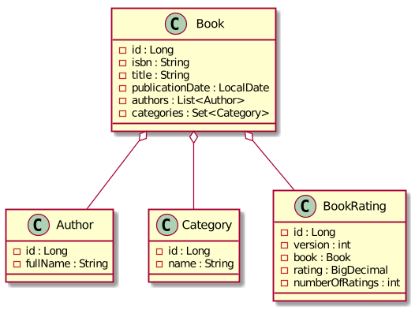
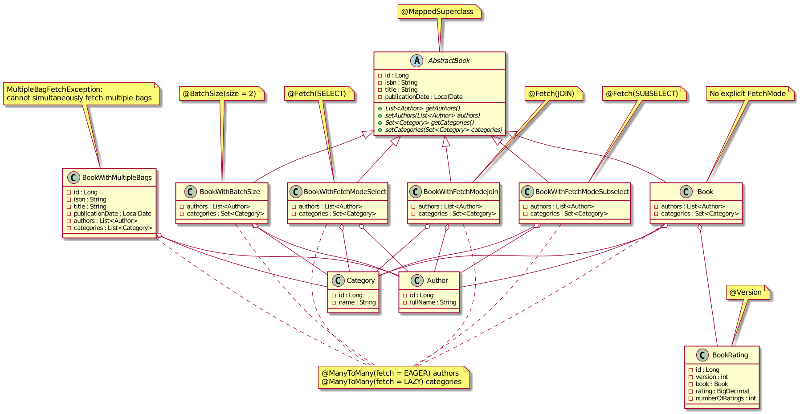
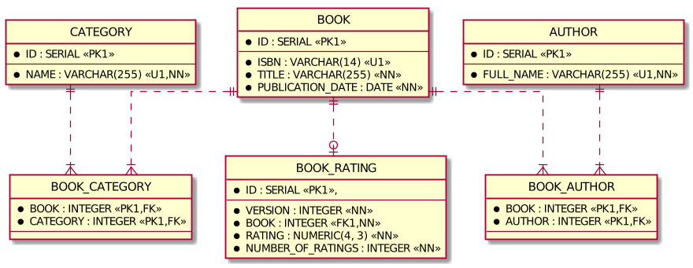
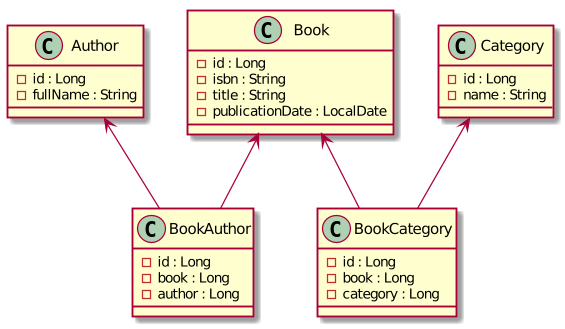
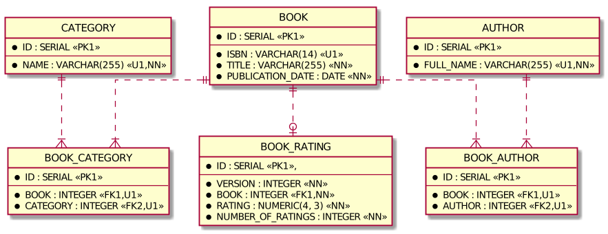

Spring Data JPA pitfalls and modern alternatives: Spring Data JDBC and Spring Data R2DBC
- Overview
- Spring Data JPA
- Spring Data JDBC
- Spring Data R2DBC
- Conclusion
- Spring Data JPA example
- Test data
- Fetching strategies
- Entity without explicit
@FetchCrudRepository.findById- Query method
- Query method with
@EntityGraph - Query method with
@EntityGraphandPageable - Query method with
@EntityGraphwith multiple attribute nodes (issue HHH-13740) @Querywith JPQLjoin fetch@Querywith JPQLjoin fetchanddistinct- Custom
@Repositorywith Criteria API query - Custom
@Repositorywith Criteria API query withfetch - Custom
@Repositorywith Criteria API query withfetchanddistinct
- Entity with
@Fetch(JOIN) - Entity with
@Fetch(SELECT) - Entity with
@Fetch(SUBSELECT) - Entity with
@BatchSize - Entity with multiple bags resulting in
MultipleBagFetchException
- Entity without explicit
- Locking strategies
- Mapping from entity to DTO using MapStruct
- Spring Data JDBC example
- Spring Data R2DBC example
Overview
These examples demonstrates some common JPA pitfalls and evaluates alternatives from the Spring Data family:
- spring-data-jpa-examples - some of common JPA pitfalls
- spring-data-jdbc-examples - Spring Data JDBC as a simpler alternative inspired by Domain-Driven Design
- spring-data-r2dbc-examples - Spring Data R2DBC for reactive database connectivity
Spring Data is a family of libraries aiming to simplify the implementation of a data access layer for Spring-based applications by reducing boilerplate code. Spring Data makes it easy to implement a Repository for accessing persistent entities in the underlying data store. Spring Data JPA allows to build repositories based on JPA.
JPA (Java Persistence API) is an API specification that defines an ORM (object-relational mapping) standard for Java applications. The most popular JPA vendor is Hibernate ORM. JPA 1.0 was released in 2006, and the latest (at the time of writing) versions are JPA 2.2 and Hibernate ORM 5.4.14.Final. JPA and Hibernate are de facto a standard way of implementing a data access layer in Java applications.
All these years JPA and Hibernate are criticized for being too complicated. Trying to operate with database records like with objects and completely hide the relational nature of a database, JPA introduces some complexity: detaching and merging entities, first-level cache, lazy loading, dirty checking, and many other features. More importantly, in the JPA, many DB calls are made behind the scenes. A simple query sometimes leads to multiple SQL queries to a DB. In its turn, too many SQL queries leads to performance problems.
Spring Data JPA
Spring Data JPA allows writing less boilerplate code, but JPA and Hibernate still have many pitfalls. The ones described in this example, I consider the most common pitfalls.
Thus, spring-data-jpa-examples demonstrate and analyze the following JPA-related topics:
- fetching strategies of
@OneToManyand@ManyToManycollections - locking strategies
- entity to DTO mapping
Fetching strategies
An entity can reference others called child entities. When fetching an entity, should Hibernate also fetch child entities? How to fetch child entities, in a separate query, or the same query by joining related tables etc.?
JPA and Hibernate have different fetch types, fetch modes. Some of them can cause problems if used improperly.
One-to-many and many-to-many relationships are mapped to fields of a class of types List and Set
annotated with JPA annotations @OneToMany or @ManyToMany.
These annotations have parameter fetch of type javax.persistence.FetchType.
There are also Hibernate-specific annotation @Fetch with parameter value of type org.hibernate.annotations.FetchMode
and @BatchSize that define how a child entity fetching is done.
javax.persistence.FetchType defines when the fetching is done
while org.hibernate.annotations.FetchMode focuses on how.
There are 2 FetchType values:
EAGER- load a child entity at the same time when the parent entity is loaded but not necessarily in a single SQL query.LAZY- postpone a child entity loading and fetch on the first access. So, if a field was never accessed, it's not fetched at all.
Be default, Hibernate lazily loads child collections (@OneToMany and @ManyToMany).
This is optimal for the majority of cases.
There are 3 FetchMode values:
SELECT- fetch each child collection using an additionalSELECTSQL query per parent entity. If a query returns N entities with 2 child collections, together with the main query, there will be 1 + N * 2SELECTqueries in total.JOIN- fetch in a single query together with a parent entity using SQLJOIN. Joining a parent entity with child collections results in duplicates in the query result set.SUBSELECT- fetch each child collection for all parent entities in a single SQL query. If a query returns N entities with 2 child collections, together with the main query, there will be 3 (1 + 2)SELECTqueries.
If a field is not annotated with @Fetch, then the default FetchMode for this field depends on a FetchType and how the query is done:
FetchType.LAZY-FetchMode.SELECTFetchType.EAGER:- getting by ID -
FetchMode.JOIN - JPQL query -
FetchMode.SELECT - Criteria API query -
FetchMode.SELECT
- getting by ID -
@BatchSize annotation defines size for batch loading of child collections.
If a query returns N entities with 2 child collections, together with the main query,
there will be 1 + ceil(N / batchSize) * 2 SELECT queries in total.
Child collection for the first 2 parent entities are loaded in the first query, for the next 2 parent entities in second query etc.
Why do we need so many options to control the fetching of child collections?
Why can't we always use FetchMode.SELECT?
It is related to so called "N+1 selects" problem.
When FetchMode.SELECT is used, Hibernate fetches associated collections using a separate SQL SELECT query.
The first SQL query selects parent (root) entities only.
Each associated collection is loaded with a separate SQL query.
Thus, Hibernate makes N+1 SQL queries, where N is the number of parent (root) entities in the result set.
Find out more about "N+1 selects" problem and other database-related performance problems in the slides.
Solutions to "N+1 selects" problem:
FetchMode.JOINFetchMode.SUBSELECT@BatchSize@EntityGraph- JPQL
join fetch - Criteria API
fetch
FetchMode.JOIN has no effect on JPQL queries.
So, use it to get entity by ID (CrudRepository.findById).
Be ready to handle duplicates in the result set due to joining a parent entity table with child collection table.
FetchMode.SUBSELECT makes Hibernate fetch all child entities for all parent entities from the result set using a single SQL query with original query as sub-select:
SELECT * FROM Parent
SELECT * FROM Child WHERE parentId IN (SELECT id FROM Parent)
But there is a pitfall. If a query has pagination (offset and limit), Hibernate doesn't include it in the sub-select:
SELECT * FROM Parent LIMIT 2
SELECT * FROM Child WHERE parentId IN (SELECT id FROM Parent)
It may result in loading all child entities (depending on the data set even millions) into the memory even if only few of them are required. It can consume a lot of memory what is unexpected.
@BatchSize is a compromise between FetchMode.SELECT and FetchMode.SUBSELECT.
With @BatchSize(size = batchSize) Hibernate generates (1 + ceil(N / batchSize)).
With a result set of size 2 and @BatchSize(size = 2), 3 queries are executed.
SELECT * FROM Parent LIMIT 2
SELECT * FROM Child WHERE parentId IN (?, ?)
SELECT * FROM Child WHERE parentId IN (?, ?)
...
Increasing batch size adds more values to the IN clause.
Remember that Oracle database has limitation of 1000 items in IN clause.
So, @BatchSize looks like the most safe solution for generic cases.
Find out more details in the example.
Locking strategies
Locks are mechanisms that prevent destructive interaction between transactions accessing the same resource.
A transaction always gets an exclusive lock on any data it modifies and holds that lock until the transaction completes, regardless of the isolation level set for the transaction.
Read committed is a default isolation for most JDBC drivers.
For read operations transaction isolation levels primarily define the level of protection from the effects of modification made by other transactions. In read committed reads are not blocking.
Exclusive lock on a record can be acquired using:
UPDATE tbl SET col1 = 'new value'SELECT col1 FROM tbl FOR UPDATE
Shared lock on a record in PostgreSQL can be acquired using:
SELECT col1 FROM tbl FOR SHARE
Records locked with SELECT FOR UPDATE are protected from modifications by other transactions.
Transactions trying to UPDATE, DELETE, SELECT FOR UPDATE, SELECT FOR SHARE are locked,
until the end of the current transaction.
Records locked with SELECT FOR SHARE are protected from UPDATE, DELETE, SELECT FOR UPDATE from other transactions
but SELECT FOR SHARE is allowed.
There are pessimistic and optimistic locking concurrency control mechanisms.
Pessimistic locking is a strategy when you lock a record when reading and then modify:
SELECT col1 FROM tbl FOR UPDATE;
...
UPDATE tbl SET col1 = 'new value';
Optimistic locking is a strategy when you read record with version number and then check this version for updating:
SELECT col1, version FROM tbl;
...
UPDATE tbl SET col1 = 'new value', version = version + 1 WHERE version = :version;
Table should have column to store version. Update of the row is done with version checking. If row version has already changed in other transaction, changes of current transaction are discarded and whole transaction should be repeated.
the first transaction started |
| the second transaction started
SELECT * FROM tbl WHERE id=1 --version=1 |
| SELECT * FROM tbl WHERE id=1 --version=1
UPDATE tbl SET val='new val', version=2 |
WHERE id=1 AND version=1 |
| UPDATE tbl SET val='new val', version=2
| WHERE id=1 AND version=1
| waiting to obtain update lock...
| waiting to obtain update lock...
commit transaction |
| No rows were updated
| because version=2 after commit of the first transaction
|
| optimistic locking exception is raised
|
| rollback transaction
If version check is optimistic locking fails, read and update queries should be re-executed.
Pessimistic locking prevents lost updates and makes updates serial (FIFO) reducing throughput. Optimistic locking just prevents lost updates.
Optimistic locking allows to reduce time the lock is held and sometimes increases throughput.
Find out more about reducing lock contention and other database-related performance problems in the slides.
If an entity has a field annotated with @Version, optimistic locking is enabled by default if the entity was modified, even without explicitly specifying LockModeType.
But if the entity was not modified, there will be no version check before transaction commit.
JPA has the following javax.persistence.LockModeType values:
OPTIMISTIC- if an entity was not modified, and a version check can't be done in anUPDATE, it is still done before a transaction commit using a simpleSELECT version FROM tblOPTIMISTIC_FORCE_INCREMENT- a version is incremented using anUPDATE tlb SET version = version + 1even if an entity was not modifiedPESSIMISTIC_WRITE- a record is locked using aSELECT FOR UPDATEPESSIMISTIC_READ- a record is locked using aSELECT FOR SHAREin PostgreSQL andSELECT FOR UPDATEin databases without shared row-level locks
LockModeType.OPTIMISTIC has a pitfall. If locked entity was not changed, Hibernate just checks version using simple SELECT.
If version was changed by another committed transaction, an OptimisticLockException exception is raised.
But between SELECT doing version check, and a commit of the current transaction there is a small time gap.
There is a risk that during this time another transaction still can change this entity.
Find out more details in the example.
Entity to DTO mapping
Exposing JPA entities in a REST API can cause problems. Instead, map entities to DTOs and expose them.
What is the difference between an entity and a DTO?
A JPA entity (@Entity) is persisted and has to correspond to the underlying database table structure.
JPA doesn't enforce modelling entities as Aggregates described in the book Domain-driven design (DDD) by Eric Evans.
Anyway, JPA entity is a part of a business domain with a structure influenced by the underlying DB schema.
A DTO is used to transfer data from a supplier to a consumer.
A structure of DTO is dictated by the consumer.
DTO contains fields the consumer needs.
DTO can have data duplication (denormalized) what is usually avoided in entities (normalization).
A single DTO can be composed of multiple entities or can be very similar to an entity.
So, it is clear, that if our REST API response need to be composed of multiple entities, we need to use DTOs. But do we need DTOs if our REST API response is similar or even identical to the JPA entity structure?
Yes, we need DTOs even if initially the JPA entity and DTO fields are identical because:
- entity can have bidirectional associations leading to cycles in object graphs (a workaround is
@JsonIgnore) LazyInitializationExceptionwhen serializing associations withFetchType.LAZY- there's 99% chance that entity or DTO structure will change and become not identical
To simplify entity to DTO mapping I recommend MapStruct library. Unlike most other bean mapping tools, MapStruct doesn’t work at runtime but is a compile-time code generator. It generates the mapper class at the compile time.
Find out more details in the example.
Spring Data JDBC
In the previous section we've found out that JPA and Hibernate has a lot of pitfalls and is complicated.
Are there an alternative to Spring Data JPA? Yes. There is Spring Data JDBC. The latest (at the time of writing) version is 2.0.0.RC1.
Is it a full-fledged replacement of Spring Data JPA? Let's try to figure it out.
Spring Data JDBC is inspired by Aggregate Roots and Repositories as described in the book Domain-driven design (DDD) by Eric Evans. Aggregate Root is an entity that controls the lifecycle of related entities forming together an Aggregate. Each Aggregate has only one Aggregate Root. You should have a Repository per Aggregate Root. Related entities (one-to-one and one-to-many relationships) doesn't exist alone without an Aggregate Root. When an Aggregate Root is deleted, all related entities get deleted too.
If two entities have different life-cycles these are separate Aggregate Roots.
Thus, in contrast to JPA, one-to-many (between different Aggregates) and many-to-many relationships must be modeled by referencing the ID
and join tables for many-to-many relationships must be mapped to a Java class and added to an Aggregate.
Spring Data JDBC enforces us to model entities like Aggregates. Also, entities can be truly immutable Java classes what is hard to achieve with JPA.
Spring Data JDBC has only one strategy for fetching child entities. Separate queries are generated for child collections (maps, lists, sets and arrays of entities).
Comparing with Hibernate, Spring Data JDBC has fetching strategy FetchType.EAGER and FetchMode.SELECT.
Lazy loading of child collections is not supported.
Also, there is no sense in joining parent and child entities tables in SQL query.
It produces duplicates in the result set while Spring Data JDBC still makes additional queries for child collections.
So, Spring Data JDBC is also subject to "N+1 selects" problem.
Spring Data JDBC supports optimistic locking by using org.springframework.data.annotation.Version annotation.
The behaviour is similar to JPA with javax.persistence.Version annotation.
Spring Data JDBC still misses some useful features like pagination for custom queries.
Nowadays reactive, non-blocking, event-driven applications is a trend. Spring WebFlux is reactive and uses non-blocking I/O in contrast to Spring MVC that is based on Servlet API and uses traditional blocking I/O. A fully reactive application has better throughput (but not the latency) in most cases, and utilizes resources more efficiently, resulting in a smaller memory footprint for handling concurrent requests. If the entire application is reactive and based on non-blocking I/O from the database to REST API, the performance might be better.
Is it possible to use Spring Data JDBC with Spring WebFlux?
Spring Data JDBC doesn't support org.springframework.data.repository.reactive.ReactiveCrudRepository directly.
To get reactive types reactor.core.publisher.Mono and reactor.core.publisher.Flux,
a blocking JDBC calls should be wrapped:
Mono<Book> blockingWrapper = Mono.fromCallable(() ->
entityRepository.findById(1).orElse(null))
.subscribeOn(Schedulers.boundedElastic());
Find out more details in the example.
Spring Data R2DBC
Spring Data JDBC is simpler than JPA and has fewer pitfalls. But it would be good to have a truly reactive non-blocking data access layer. That's where Spring Data R2DBC comes in. The latest (at the time of writing) version is Spring Data R2DBC 1.1.0.RC1.
Spring Data R2DBC uses Reactive Relational Database Connectivity, a reactive programming APIs to relational databases. In contrast to the blocking nature of JDBC, R2DBC is non-blocking and has a reactive API. R2DBC drivers are available for:
- PostgreSQL
- MySQL
- MS SQL
- H2
Spring Data R2DBC used together with Spring WebFlux allows to develop fully-reactive and non-blocking applications.
Spring Data R2DBC concept is to be a simple and easy to use object mapper and does NOT provide many features of ORM.
One-to-one, one-to-many and many-to-many relationships are not supported.
Thus, in contrast to JPA, relationships must be modeled by referencing the ID and join tables for many-to-many relationships must be mapped to a Java class.
Spring Data R2DBC is raw and lack a lot of features. For example:
- R2DBC ORM Relationships Support
- https://github.com/spring-projects/spring-framework/issues/24226
- Implicit pagination with
org.springframework.data.domain.Pageableis not supported
Fetching associations and mapping to DTO are not easy tasks with Spring Data R2DBC.
Find out more details in the example.
Conclusion
Spring Data JPA dramatically reduces the amount of boilerplate code. Anyway, JPA and Hibernate have a lot of pitfalls developers should be aware of. Developers have a little control over SQL queries that Hibernate generates. The result is "N+1 selects" problem or loading the whole database table into the memory.
Spring Data JDBC is a simpler alternative. It gives developers more control over SQL queries. But it lacks a lot of features like implicit pagination and also is a subject to "N+1 selects problem". Spring Data JDBC is a good choice for a simple applications with a simple domain model.
Spring Data R2DBC is in active development and misses a lot of features but looks very promising. The idea to have an entirely reactive Java application based on non-blocking I/O from the database to REST API, is very interesting.
So, in Spring Data family there is no production-ready alternative to Spring Data JPA for enterprise applications nowadays.
Spring Data JPA example
spring-data-jpa-examples has a simple domain model. A book has at least one author and belongs to at least one category. A book can be rated. An average rating and a total number of ratings are tracked.
Simplified UML class diagram

Many-to-many relationship List<Author> authors has javax.persistence.FetchType.EAGER
and many-to-many relationship Set<Category> categories has javax.persistence.FetchType.LAZY.
To demonstrate how different org.hibernate.annotations.FetchModes work
the hierarchy of book classes used:
com.example.spring.data.jpa.entity.AbstractBook-@MappedSuperclasscom.example.spring.data.jpa.entity.Book- no explicit@Fetchcom.example.spring.data.jpa.entity.BookWithFetchModeJoin-@Fetch(JOIN)com.example.spring.data.jpa.entity.BookWithFetchModeSelect-@Fetch(SELECT)com.example.spring.data.jpa.entity.BookWithFetchModeSubselect-@Fetch(SUBSELECT)com.example.spring.data.jpa.entity.BookWithBatchSize-@BatchSizecom.example.spring.data.jpa.entity.BookWithMultipleBags- doesn't extendAbstractBookand hasList<Category> categoriesinstead of Setlike in AbstractBookand its children what leads toMultipleBagFetchException: cannot simultaneously fetch multiple bagswhen both relations are fetched using join.
To demonstrate locking strategies a com.example.spring.data.jpa.entity.BookRating class has @Version int version field.
Actual UML class diagram

Entity-relationship diagram

The example uses Testcontainers library that manages Docker containers in JUnit tests. This library starts a PostgreSQL Docker container for integration tests. Using the same database in production and integration tests is a big advantage compared to using in-memory databases like H2 or HSQLDB.
Test data
com.example.spring.data.jpa.AbstractBookRepositoryBaseTest
void saveCategories() {
softwareDevelopment = new Category("Software development");
systemDesign = new Category("System design");
categoryRepository.saveAll(List.of(systemDesign, softwareDevelopment));
}
void saveAuthors() {
erichGamma = new Author("Erich Gamma");
richardHelm = new Author("Richard Helm");
ralphJohnson = new Author("Ralph Johnson");
johnVlissides = new Author("John Vlissides");
martinFowler = new Author("Martin Fowler");
gregorHohpe = new Author("Gregor Hohpe");
bobbyWoolf = new Author("Bobby Woolf");
authorRepository.saveAll(List.of(
erichGamma, richardHelm, ralphJohnson, johnVlissides,
martinFowler, gregorHohpe, bobbyWoolf));
}
void saveBooks() {
gof = createBook();
gof.setIsbn("978-0201633610");
gof.setTitle("Design Patterns: Elements of Reusable Object-Oriented Software");
gof.setPublicationDate(LocalDate.parse("1994-11-10"));
gof.getAuthors().addAll(List.of(erichGamma, richardHelm, ralphJohnson, johnVlissides));
gof.getCategories().add(softwareDevelopment);
poeaa = createBook();
poeaa.setIsbn("007-6092019909");
poeaa.setTitle("Patterns of Enterprise Application Architecture");
poeaa.setPublicationDate(LocalDate.parse("2002-11-15"));
poeaa.getAuthors().add(martinFowler);
poeaa.getCategories().addAll(List.of(softwareDevelopment, systemDesign));
eip = createBook();
eip.setIsbn("978-0321200686");
eip.setTitle("Enterprise Integration Patterns");
eip.setPublicationDate(LocalDate.parse("2003-10-20"));
eip.getAuthors().addAll(List.of(gregorHohpe, bobbyWoolf));
eip.getCategories().addAll(List.of(softwareDevelopment, systemDesign));
getBookRepository().saveAll(List.of(gof, poeaa, eip));
}
com.example.spring.data.jpa.BookRatingRepositoryTest
book = new Book();
book.setIsbn("007-6092019909");
book.setTitle("Patterns of Enterprise Application Architecture");
book.setPublicationDate(LocalDate.parse("2002-11-15"));
bookRepository.save(book);
rating = new BookRating();
rating.setBook(book);
rating.setRating(new BigDecimal("4.4"));
rating.setNumberOfRatings(240);
bookRatingRepository.save(rating);
Fetching strategies
Entity without explicit @Fetch
com.example.spring.data.jpa.entity.Book
@Entity
@Data
@EqualsAndHashCode(callSuper = true, onlyExplicitlyIncluded = true)
@ToString(callSuper = true)
public class Book extends AbstractBook {
@ManyToMany(fetch = EAGER)
private List<Author> authors = new ArrayList<>();
@ManyToMany
private Set<Category> categories = new LinkedHashSet<>();
}
CrudRepository.findById
com.example.spring.data.jpa.BookRepositoryTest extends com.example.spring.data.jpa.AbstractBookRepositoryBaseTest
@Test
void findById() {
Optional<T> poeaa = getBookRepository().findById(this.poeaa.getId());
assertThat(poeaa).hasValueSatisfying(equalTo(this.poeaa));
}
2 SQL queries are executed.
-
Select book and authors. When searching by ID using
CrudRepository.findById, the defaultFetchModefor associations withFetchType.EAGERisFetchMode.JOINSELECT book0_.id AS id1_1_0_, book0_.isbn AS isbn2_1_0_, book0_.publication_date AS publicat3_1_0_, book0_.title AS title4_1_0_, authors1_.book_id AS book_id1_2_1_, author2_.id AS authors_2_2_1_, author2_.id AS id1_0_2_, author2_.full_name AS full_nam2_0_2_ FROM book book0_ LEFT OUTER JOIN book_authors authors1_ ON book0_.id = authors1_.book_id LEFT OUTER JOIN author author2_ ON authors1_.authors_id = author2_.id WHERE book0_.id = ? /*57*/ -
Lazily select categories after the first access. When searching by ID using
CrudRepository.findById, the defaultFetchModefor associations withFetchType.LAZYisFetchMode.SELECTSELECT categories0_.book_id AS book_id1_3_0_, categories0_.categories_id AS categori2_3_0_, category1_.id AS id1_20_1_, category1_.NAME AS name2_20_1_ FROM book_categories categories0_ INNER JOIN category category1_ ON categories0_.categories_id = category1_.id WHERE categories0_.book_id = ? /*57*/
Query method
com.example.spring.data.jpa.repository.BookRepository extends com.example.spring.data.jpa.repository.AbstractBookRepository
List<T> findByTitleContains(String title, Pageable pageable);
com.example.spring.data.jpa.BookRepositoryTest extends com.example.spring.data.jpa.AbstractBookRepositoryBaseTest
@Test
void queryMethod() {
List<T> books = getBookRepository()
.findByTitleContains("Pattern", PageRequest.of(0, 2, DESC, "publicationDate"));
assertThat(books)
.hasSize(2)
.satisfies(equalTo(this.eip), atIndex(0))
.satisfies(equalTo(this.poeaa), atIndex(1));
}
Query selects 2 books, so 5 SQL queries are executed.
-
Select books.
FetchType.EAGERhas no effect when query method is used (JPQL), so theFetchMode.SELECTis used for all associationsSELECT book0_.id AS id1_1_, book0_.isbn AS isbn2_1_, book0_.publication_date AS publicat3_1_, book0_.title AS title4_1_ FROM book book0_ WHERE book0_.title LIKE ? escape ? /*%Pattern%,\*/ ORDER BY book0_.publication_date DESC LIMIT ? /*2*/ -
Select authors for the 1st book from the result set. There will be a separate SQL query for each entity and its association from the result set ("N+1 selects" problem)
SELECT authors0_.book_id AS book_id1_2_0_, authors0_.authors_id AS authors_2_2_0_, author1_.id AS id1_0_1_, author1_.full_name AS full_nam2_0_1_ FROM book_authors authors0_ INNER JOIN author author1_ ON authors0_.authors_id = author1_.id WHERE authors0_.book_id = ? /*57*/ -
Select authors for the 2nd book from the result set
SELECT authors0_.book_id AS book_id1_2_0_, authors0_.authors_id AS authors_2_2_0_, author1_.id AS id1_0_1_, author1_.full_name AS full_nam2_0_1_ FROM book_authors authors0_ INNER JOIN author author1_ ON authors0_.authors_id = author1_.id WHERE authors0_.book_id = ? /*58*/ -
Lazily select categories after the first access to the 1st book from the result set
SELECT categories0_.book_id AS book_id1_3_0_, categories0_.categories_id AS categori2_3_0_, category1_.id AS id1_20_1_, category1_.NAME AS name2_20_1_ FROM book_categories categories0_ INNER JOIN category category1_ ON categories0_.categories_id = category1_.id WHERE categories0_.book_id = ? /*58*/ -
Lazily select categories after the first access to the 2nd book from the result set
SELECT categories0_.book_id AS book_id1_3_0_, categories0_.categories_id AS categori2_3_0_, category1_.id AS id1_20_1_, category1_.NAME AS name2_20_1_ FROM book_categories categories0_ INNER JOIN category category1_ ON categories0_.categories_id = category1_.id WHERE categories0_.book_id = ? /*57*/
Query method with @EntityGraph
JPA 2.1 has introduced the Entity Graph feature as dynamic alternative to FetchType.LAZY and FetchType.EAGER that are static and can't be changed at runtime.
Entity Graph allows to specify what associations and basic fields have to loaded.
As mentioned above, FetchType.EAGER applied to child collections is ignored by JPQL queries.
So, Entity Graph is a solution for making Hibernate fetch child collections eagerly using SQL join.
The javax.persistence.NamedEntityGraph annotation allows specifying the attributes to include when loading the entity and its related associations.
Different query method can use different Entity Graphs, referencing them by name in org.springframework.data.jpa.repository.EntityGraph annotation.
com.example.spring.data.jpa.entity.Book
@NamedEntityGraph(name = "Book.authors",
attributeNodes = @NamedAttributeNode("authors")
)
com.example.spring.data.jpa.repository.BookRepository
@EntityGraph("Book.authors")
List<Book> findByPublicationDateAfter(LocalDate date, Sort sort);
com.example.spring.data.jpa.BookRepositoryTest
@Test
void entityGraph() {
List<Book> books = bookRepository
.findByPublicationDateAfter(LocalDate.parse("2000-01-01"), Sort.by(ASC, "publicationDate"));
assertThat(books)
.hasSize(2)
.satisfies(equalTo(this.poeaa), atIndex(0))
.satisfies(equalTo(this.eip), atIndex(1));
}
Query selects 2 books, so 3 SQL queries are executed.
-
Select books and related authors using join as defined in the Entity Graph
SELECT book0_.id AS id1_1_0_, author2_.id AS id1_0_1_, book0_.isbn AS isbn2_1_0_, book0_.publication_date AS publicat3_1_0_, book0_.title AS title4_1_0_, author2_.full_name AS full_nam2_0_1_, authors1_.book_id AS book_id1_2_0__, authors1_.authors_id AS authors_2_2_0__ FROM book book0_ LEFT OUTER JOIN book_authors authors1_ ON book0_.id = authors1_.book_id LEFT OUTER JOIN author author2_ ON authors1_.authors_id = author2_.id WHERE book0_.publication_date >? /*2000-01-01*/ ORDER BY book0_.publication_date ASC -
Lazily select categories after the first access to the 1st book from the result set
SELECT categories0_.book_id AS book_id1_3_0_, categories0_.categories_id AS categori2_3_0_, category1_.id AS id1_20_1_, category1_.NAME AS name2_20_1_ FROM book_categories categories0_ INNER JOIN category category1_ ON categories0_.categories_id = category1_.id WHERE categories0_.book_id = ? /*57*/ -
Lazily select categories after the first access to the 2nd book from the result set
SELECT categories0_.book_id AS book_id1_3_0_, categories0_.categories_id AS categori2_3_0_, category1_.id AS id1_20_1_, category1_.NAME AS name2_20_1_ FROM book_categories categories0_ INNER JOIN category category1_ ON categories0_.categories_id = category1_.id WHERE categories0_.book_id = ? /*58*/
Query method with @EntityGraph and Pageable
Usage of @EntityGraph with Pageable results in warning
HHH000104: firstResult/maxResults specified with collection fetch; applying in memory!.
The whole table is loaded into memory and then filtered.
com.example.spring.data.jpa.repository.BookRepository
@EntityGraph("Book.authors")
List<Book> findByPublicationDateAfter(LocalDate date, Pageable pageable);
com.example.spring.data.jpa.BookRepositoryTest
@Test
void entityGraphWithPageable() {
List<Book> books = bookRepository.findByPublicationDateAfter(
LocalDate.parse("2000-01-01"), PageRequest.of(0, 1, ASC, "publicationDate"));
assertThat(books)
.hasSize(1)
.satisfies(equalTo(this.poeaa), atIndex(0));
}
Query selects 1 book, then the result set is pagination is applied in memory, so 2 SQL queries are executed.
-
Select books and related authors using join without limiting maximum results (SQL
LIMIT)SELECT book0_.id AS id1_1_0_, author2_.id AS id1_0_1_, book0_.isbn AS isbn2_1_0_, book0_.publication_date AS publicat3_1_0_, book0_.title AS title4_1_0_, author2_.full_name AS full_nam2_0_1_, authors1_.book_id AS book_id1_2_0__, authors1_.authors_id AS authors_2_2_0__ FROM book book0_ LEFT OUTER JOIN book_authors authors1_ ON book0_.id = authors1_.book_id LEFT OUTER JOIN author author2_ ON authors1_.authors_id = author2_.id WHERE book0_.publication_date >? /*2000-01-01*/ ORDER BY book0_.publication_date ASC -
Lazily select categories after the first access to the 1st book from the result set
SELECT categories0_.book_id AS book_id1_3_0_, categories0_.categories_id AS categori2_3_0_, category1_.id AS id1_20_1_, category1_.NAME AS name2_20_1_ FROM book_categories categories0_ INNER JOIN category category1_ ON categories0_.categories_id = category1_.id WHERE categories0_.book_id = ? /*57*/
Query method with @EntityGraph with multiple attribute nodes (issue HHH-13740)
When @EntityGraph has multiple attribute nodes and so defines multiple child collection to be eagerly fetched
we face with issue HHH-13740 related to duplicates in the child collections.
Find out more details about HHH-13740 in the separate examples.
com.example.spring.data.jpa.entity.Book
@NamedEntityGraph(name = "Book.authors-categories",
attributeNodes = {
@NamedAttributeNode("authors"),
@NamedAttributeNode("categories")
}
)
com.example.spring.data.jpa.repository.BookRepository
@EntityGraph("Book.authors-categories")
List<Book> findByPublicationDateBetween(LocalDate startDate, LocalDate endDate, Sort sort);
com.example.spring.data.jpa.BookRepositoryTest
@Test
void entityGraphMultipleAttributeNodes() {
List<Book> books = bookRepository.findByPublicationDateBetween(
LocalDate.parse("2000-01-01"), LocalDate.parse("2020-01-01"),
Sort.by(ASC, "publicationDate"));
assertThat(books)
.containsExactlyInAnyOrder(this.poeaa, this.eip);
assertThat(books.get(0).getAuthors())
.hasSize(2)
.containsExactlyInAnyOrder(martinFowler, martinFowler); //duplicate
assertThat(books.get(1).getAuthors())
.hasSize(4)
.containsExactlyInAnyOrder(gregorHohpe, gregorHohpe, bobbyWoolf, bobbyWoolf); //duplicates
}
1 SQL query is executed.
- Select books and related authors and categories using SQL join
SELECT book0_.id AS id1_1_0_, author2_.id AS id1_0_1_, category4_.id AS id1_20_2_, book0_.isbn AS isbn2_1_0_, book0_.publication_date AS publicat3_1_0_, book0_.title AS title4_1_0_, author2_.full_name AS full_nam2_0_1_, authors1_.book_id AS book_id1_2_0__, authors1_.authors_id AS authors_2_2_0__, category4_.NAME AS name2_20_2_, categories3_.book_id AS book_id1_3_1__, categories3_.categories_id AS categori2_3_1__ FROM book book0_ LEFT OUTER JOIN book_authors authors1_ ON book0_.id = authors1_.book_id LEFT OUTER JOIN author author2_ ON authors1_.authors_id = author2_.id LEFT OUTER JOIN book_categories categories3_ ON book0_.id = categories3_.book_id LEFT OUTER JOIN category category4_ ON categories3_.categories_id = category4_.id WHERE book0_.publication_date BETWEEN ? AND ? /*2000-01-01,2020-01-01*/ ORDER BY book0_.publication_date ASC
@Query with JPQL join fetch
One more way to fetch related association using SQL join is to use custom JPQL query with join fetch.
The result set in such a case will contain duplicates if the child collection size is greater than 1 (>=2).
In this example duplicates are caused by join of the book with multiple authors.
com.example.spring.data.jpa.repository.BookRepository
@Query("select b from Book b join fetch b.authors"
+ " where b.publicationDate > :date"
+ " order by b.publicationDate asc")
List<Book> findByPublicationDateAfterJoinFetch(LocalDate date);
com.example.spring.data.jpa.BookRepositoryTest
@Test
void jpqlJoinFetch() {
List<Book> books =
bookRepository.findByPublicationDateAfterJoinFetch(LocalDate.parse("2000-01-01"));
assertThat(books)
.hasSize(3)
.satisfies(equalTo(this.poeaa), atIndex(0))
.satisfies(equalTo(this.eip), atIndex(1))
.satisfies(equalTo(this.eip), atIndex(2)); //duplicate
}
Query selects 2 books, so 3 SQL queries are executed.
-
Select books and related authors using join
SELECT book0_.id AS id1_1_0_, author2_.id AS id1_0_1_, book0_.isbn AS isbn2_1_0_, book0_.publication_date AS publicat3_1_0_, book0_.title AS title4_1_0_, author2_.full_name AS full_nam2_0_1_, authors1_.book_id AS book_id1_2_0__, authors1_.authors_id AS authors_2_2_0__ FROM book book0_ INNER JOIN book_authors authors1_ ON book0_.id = authors1_.book_id INNER JOIN author author2_ ON authors1_.authors_id = author2_.id WHERE book0_.publication_date >? /*2000-01-01*/ ORDER BY book0_.publication_date ASC -
Lazily select categories after the first access to the 1st book from the result set
SELECT categories0_.book_id AS book_id1_3_0_, categories0_.categories_id AS categori2_3_0_, category1_.id AS id1_20_1_, category1_.NAME AS name2_20_1_ FROM book_categories categories0_ INNER JOIN category category1_ ON categories0_.categories_id = category1_.id WHERE categories0_.book_id = ? /*57*/ -
Lazily select categories after the first access to the 2nd book from the result set
SELECT categories0_.book_id AS book_id1_3_0_, categories0_.categories_id AS categori2_3_0_, category1_.id AS id1_20_1_, category1_.NAME AS name2_20_1_ FROM book_categories categories0_ INNER JOIN category category1_ ON categories0_.categories_id = category1_.id WHERE categories0_.book_id = ? /*58*/
@Query with JPQL join fetch and distinct
A workaround to the issue with duplicates due to using JQPL join fetch is to use distinct operator.
com.example.spring.data.jpa.repository.BookRepository
@Query("select distinct b from Book b join fetch b.authors"
+ " where b.publicationDate > :date"
+ " order by b.publicationDate asc")
List<Book> findByPublicationDateAfterJoinFetchDistinct(LocalDate date);
com.example.spring.data.jpa.BookRepositoryTest
@Test
void jpqlJoinFetchDistinct() {
List<Book> books =
bookRepository.findByPublicationDateAfterJoinFetchDistinct(LocalDate.parse("2000-01-01"));
assertThat(books)
.hasSize(2)
.satisfies(equalTo(this.poeaa), atIndex(0))
.satisfies(equalTo(this.eip), atIndex(1));
}
Query selects 2 books, so 3 SQL queries are executed.
-
Select distinct books and related authors using join
SELECT DISTINCT book0_.id AS id1_1_0_, author2_.id AS id1_0_1_, book0_.isbn AS isbn2_1_0_, book0_.publication_date AS publicat3_1_0_, book0_.title AS title4_1_0_, author2_.full_name AS full_nam2_0_1_, authors1_.book_id AS book_id1_2_0__, authors1_.authors_id AS authors_2_2_0__ FROM book book0_ INNER JOIN book_authors authors1_ ON book0_.id = authors1_.book_id INNER JOIN author author2_ ON authors1_.authors_id = author2_.id WHERE book0_.publication_date >? /*2000-01-01*/ ORDER BY book0_.publication_date ASC -
Lazily select categories after the first access to the 1st book from the result set
SELECT categories0_.book_id AS book_id1_3_0_, categories0_.categories_id AS categori2_3_0_, category1_.id AS id1_20_1_, category1_.NAME AS name2_20_1_ FROM book_categories categories0_ INNER JOIN category category1_ ON categories0_.categories_id = category1_.id WHERE categories0_.book_id = ? /*57*/ -
Lazily select categories after the first access to the 2nd book from the result set
SELECT categories0_.book_id AS book_id1_3_0_, categories0_.categories_id AS categori2_3_0_, category1_.id AS id1_20_1_, category1_.NAME AS name2_20_1_ FROM book_categories categories0_ INNER JOIN category category1_ ON categories0_.categories_id = category1_.id WHERE categories0_.book_id = ? /*58*/
Custom @Repository with Criteria API query
Spring Data JPA also supports Criteria API queries.
Create an extension interface with a method for a custom query you want to implement using Criteria API.
Extend your repository interface from this extension interface.
Create a class implementing the extension interface and annotate it with @Repository.
com.example.spring.data.jpa.repository.BookRepository
public interface BookRepository
extends AbstractBookRepository<Book>, BookRepositoryCustom {
/*...*/
}
com.example.spring.data.jpa.repository.BookRepositoryCustom
public interface BookRepositoryCustom {
List<Book> findByAuthorNameAndTitle(
boolean fetchAuthor, boolean distinct, String authorName, String title);
}
com.example.spring.data.jpa.repository.BookRepositoryCustomImpl
@Repository
@RequiredArgsConstructor
public class BookRepositoryCustomImpl implements BookRepositoryCustom {
private final EntityManager em;
@Override
public List<Book> findByAuthorNameAndTitle(
boolean fetchAuthor, boolean distinct, String authorName, String title) {
CriteriaBuilder cb = em.getCriteriaBuilder();
CriteriaQuery<Book> cq = cb.createQuery(Book.class);
Root<Book> book = cq.from(Book.class);
Path<Object> authors;
if (fetchAuthor) {
book.fetch("authors");
authors = book.get("authors");
} else {
authors = book.join("authors");
}
List<Predicate> predicates = new ArrayList<>();
if (authorName != null) {
predicates.add(cb.like(authors.get("fullName"), "%" + authorName + "%"));
}
if (title != null) {
predicates.add(cb.like(book.get("title"), "%" + title + "%"));
}
cq.select(book)
.distinct(distinct)
.where(predicates.toArray(new Predicate[0]))
.orderBy(cb.asc(book.get("publicationDate")));
return em.createQuery(cq).getResultList();
}
}
In Criteria API to have a predicate referencing child entity you need to use join.
The result set in such a case will contain duplicates if the child collection size is greater than 1 (>=2).
In this example duplicates are caused by join of the book with multiple authors.
com.example.spring.data.jpa.BookRepositoryTest
@Test
void criteriaQuery() {
log.info("Custom @Repository with Criteria API query");
List<Book> books = bookRepository.findByAuthorNameAndTitle(false, false, null, "Enterprise");
assertThat(books)
.hasSize(3)
.satisfies(equalTo(this.poeaa), atIndex(0))
.satisfies(equalTo(this.eip), atIndex(1))
.satisfies(equalTo(this.eip), atIndex(2)); //duplicate
}
FetchType.EAGER doesn't have effect on Criteria API, so all related associations are loaded with a separate SQL query (FetchMode.SELECT).
Query selects 2 books, so 5 SQL queries are executed.
-
Select books
SELECT book0_.id AS id1_1_, book0_.isbn AS isbn2_1_, book0_.publication_date AS publicat3_1_, book0_.title AS title4_1_ FROM book book0_ INNER JOIN book_authors authors1_ ON book0_.id = authors1_.book_id INNER JOIN author author2_ ON authors1_.authors_id = author2_.id WHERE book0_.title LIKE ? /*%Enterprise%*/ ORDER BY book0_.publication_date ASC -
Select authors for the 1st book from the result set
SELECT authors0_.book_id AS book_id1_2_0_, authors0_.authors_id AS authors_2_2_0_, author1_.id AS id1_0_1_, author1_.full_name AS full_nam2_0_1_ FROM book_authors authors0_ INNER JOIN author author1_ ON authors0_.authors_id = author1_.id WHERE authors0_.book_id = ? /*58*/ -
Select authors for the 2nd book from the result set
SELECT authors0_.book_id AS book_id1_2_0_, authors0_.authors_id AS authors_2_2_0_, author1_.id AS id1_0_1_, author1_.full_name AS full_nam2_0_1_ FROM book_authors authors0_ INNER JOIN author author1_ ON authors0_.authors_id = author1_.id WHERE authors0_.book_id = ? /*57*/ -
Lazily select categories after the first access to the 1st book from the result set
SELECT categories0_.book_id AS book_id1_3_0_, categories0_.categories_id AS categori2_3_0_, category1_.id AS id1_20_1_, category1_.NAME AS name2_20_1_ FROM book_categories categories0_ INNER JOIN category category1_ ON categories0_.categories_id = category1_.id WHERE categories0_.book_id = ? /*57*/ -
Lazily select categories after the first access to the 2nd book from the result set
SELECT categories0_.book_id AS book_id1_3_0_, categories0_.categories_id AS categori2_3_0_, category1_.id AS id1_20_1_, category1_.NAME AS name2_20_1_ FROM book_categories categories0_ INNER JOIN category category1_ ON categories0_.categories_id = category1_.id WHERE categories0_.book_id = ? /*58*/
Custom @Repository with Criteria API query with fetch
To eagerly load a related association in Criteria API, use fetch method.
CriteriaBuilder cb = em.getCriteriaBuilder();
CriteriaQuery<Book> cq = cb.createQuery(Book.class);
Root<Book> book = cq.from(Book.class);
book.fetch("authors");
com.example.spring.data.jpa.BookRepositoryTest
@Test
void criteriaQueryFetch() {
List<Book> books = bookRepository.findByAuthorNameAndTitle(true, false, null, "Enterprise");
assertThat(books)
.hasSize(3)
.satisfies(equalTo(this.poeaa), atIndex(0))
.satisfies(equalTo(this.eip), atIndex(1))
.satisfies(equalTo(this.eip), atIndex(2)); //duplicate
}
Query selects 2 books, so 3 SQL queries are executed.
-
Select books and related authors using SQL join
SELECT book0_.id AS id1_1_0_, author2_.id AS id1_0_1_, book0_.isbn AS isbn2_1_0_, book0_.publication_date AS publicat3_1_0_, book0_.title AS title4_1_0_, author2_.full_name AS full_nam2_0_1_, authors1_.book_id AS book_id1_2_0__, authors1_.authors_id AS authors_2_2_0__ FROM book book0_ INNER JOIN book_authors authors1_ ON book0_.id = authors1_.book_id INNER JOIN author author2_ ON authors1_.authors_id = author2_.id WHERE book0_.title LIKE ? /*%Enterprise%*/ ORDER BY book0_.publication_date ASC -
Lazily select categories after the first access to the 1st book from the result set
SELECT categories0_.book_id AS book_id1_3_0_, categories0_.categories_id AS categori2_3_0_, category1_.id AS id1_20_1_, category1_.NAME AS name2_20_1_ FROM book_categories categories0_ INNER JOIN category category1_ ON categories0_.categories_id = category1_.id WHERE categories0_.book_id = ? /*57*/ -
Lazily select categories after the first access to the 2nd book from the result set
SELECT categories0_.book_id AS book_id1_3_0_, categories0_.categories_id AS categori2_3_0_, category1_.id AS id1_20_1_, category1_.NAME AS name2_20_1_ FROM book_categories categories0_ INNER JOIN category category1_ ON categories0_.categories_id = category1_.id WHERE categories0_.book_id = ? /*58*/
Custom @Repository with Criteria API query with fetch and distinct
A workaround to the issue with duplicates due to using join or fetch in Criteria API is to use distinct method.
cq.select(book)
.distinct(distinct)
.where(predicates.toArray(new Predicate[0]))
.orderBy(cb.asc(book.get("publicationDate")));
com.example.spring.data.jpa.BookRepositoryTest
@Test
void criteriaQueryFetchDistinct() {
List<Book> books = bookRepository.findByAuthorNameAndTitle(true, true, null, "Enterprise");
assertThat(books)
.hasSize(2)
.satisfies(equalTo(this.poeaa), atIndex(0))
.satisfies(equalTo(this.eip), atIndex(1));
}
Query selects 2 books, so 3 SQL queries are executed.
-
Select distinct books and related authors using join
SELECT DISTINCT book0_.id AS id1_1_0_, author2_.id AS id1_0_1_, book0_.isbn AS isbn2_1_0_, book0_.publication_date AS publicat3_1_0_, book0_.title AS title4_1_0_, author2_.full_name AS full_nam2_0_1_, authors1_.book_id AS book_id1_2_0__, authors1_.authors_id AS authors_2_2_0__ FROM book book0_ INNER JOIN book_authors authors1_ ON book0_.id = authors1_.book_id INNER JOIN author author2_ ON authors1_.authors_id = author2_.id WHERE book0_.title LIKE ? /*%Enterprise%*/ ORDER BY book0_.publication_date ASC -
Lazily select categories after the first access to the 1st book from the result set
SELECT categories0_.book_id AS book_id1_3_0_, categories0_.categories_id AS categori2_3_0_, category1_.id AS id1_20_1_, category1_.NAME AS name2_20_1_ FROM book_categories categories0_ INNER JOIN category category1_ ON categories0_.categories_id = category1_.id WHERE categories0_.book_id = ? /*57*/ -
Lazily select categories after the first access to the 2nd book from the result set
SELECT categories0_.book_id AS book_id1_3_0_, categories0_.categories_id AS categori2_3_0_, category1_.id AS id1_20_1_, category1_.NAME AS name2_20_1_ FROM book_categories categories0_ INNER JOIN category category1_ ON categories0_.categories_id = category1_.id WHERE categories0_.book_id = ? /*58*/
Entity with @Fetch(JOIN)
com.example.spring.data.jpa.entity.BookWithFetchModeJoin
@Entity
@Data
@EqualsAndHashCode(callSuper = true, onlyExplicitlyIncluded = true)
@ToString(callSuper = true)
public class BookWithFetchModeJoin extends AbstractBook {
@ManyToMany(fetch = EAGER)
@Fetch(JOIN)
private List<Author> authors = new ArrayList<>();
@ManyToMany
@Fetch(JOIN)
private Set<Category> categories = new LinkedHashSet<>();
}
CrudRepository.findById
When multiple child collection has FetchMode.JOIN
we face with issue HHH-13740 related to duplicates in the child collections.
Find out more details about HHH-13740 in the separate examples.
com.example.spring.data.jpa.BookWithFetchModeJoinRepositoryTest
@Test
void findById() {
Optional<BookWithFetchModeJoin> poeaa = bookRepository.findById(this.poeaa.getId());
Optional<BookWithFetchModeJoin> eip = bookRepository.findById(this.eip.getId());
assertThat(poeaa).hasValueSatisfying(book ->
assertThat(book.getAuthors())
.hasSize(2)
.containsExactlyInAnyOrder(martinFowler, martinFowler)); //duplicate
assertThat(eip).hasValueSatisfying(book ->
assertThat(book.getAuthors())
.hasSize(4)
.containsExactlyInAnyOrder(gregorHohpe, gregorHohpe, bobbyWoolf, bobbyWoolf)); //duplicates
}
A single SQL query is executed per CrudRepository.findById call.
- Select book with authors and categories
SELECT bookwithfe0_.id AS id1_8_0_, bookwithfe0_.isbn AS isbn2_8_0_, bookwithfe0_.publication_date AS publicat3_8_0_, bookwithfe0_.title AS title4_8_0_, authors1_.book_with_fetch_mode_join_id AS book_wit1_9_1_, author2_.id AS authors_2_9_1_, author2_.id AS id1_0_2_, author2_.full_name AS full_nam2_0_2_, categories3_.book_with_fetch_mode_join_id AS book_wit1_10_3_, category4_.id AS categori2_10_3_, category4_.id AS id1_20_4_, category4_.NAME AS name2_20_4_ FROM book_with_fetch_mode_join bookwithfe0_ LEFT OUTER JOIN book_with_fetch_mode_join_authors authors1_ ON bookwithfe0_.id = authors1_.book_with_fetch_mode_join_id LEFT OUTER JOIN author author2_ ON authors1_.authors_id = author2_.id LEFT OUTER JOIN book_with_fetch_mode_join_categories categories3_ ON bookwithfe0_.id = categories3_.book_with_fetch_mode_join_id LEFT OUTER JOIN category category4_ ON categories3_.categories_id = category4_.id WHERE bookwithfe0_.id = ?
Query method
The behavior of JQPL queries (query methods) during the loading entities
with associations with FetchMode.JOIN is, at first glance, a bit unexpected.
Instead of loading related collections annotated with @Fetch(JOIN) in the same query
with parent entities using the SQL join operator,
the JPQL query is translated into multiple SQL queries just like with FetchMode.SELECT.
Unlike FetchMode.SELECT, with FetchMode.JOIN the specified FetchType (LAZY and EAGER)
is ignored, and all collections are loaded eagerly.
com.example.spring.data.jpa.BookWithFetchModeJoinRepositoryTest extends com.example.spring.data.jpa.AbstractBookRepositoryBaseTest
@Test
void queryMethod() {
List<T> books = getBookRepository()
.findByTitleContains("Pattern", PageRequest.of(0, 2, DESC, "publicationDate"));
assertThat(books)
.hasSize(2)
.satisfies(equalTo(this.eip), atIndex(0))
.satisfies(equalTo(this.poeaa), atIndex(1));
}
Query selects 2 books, so 5 SQL queries are executed.
-
Select books
SELECT bookwithfe0_.id AS id1_8_, bookwithfe0_.isbn AS isbn2_8_, bookwithfe0_.publication_date AS publicat3_8_, bookwithfe0_.title AS title4_8_ FROM book_with_fetch_mode_join bookwithfe0_ WHERE bookwithfe0_.title LIKE ? escape ? /*%Pattern%,\*/ ORDER BY bookwithfe0_.publication_date DESC LIMIT ? /*2*/ -
Select categories for the 1st book from the result set
SELECT categories0_.book_with_fetch_mode_join_id AS book_wit1_10_0_, categories0_.categories_id AS categori2_10_0_, category1_.id AS id1_20_1_, category1_.NAME AS name2_20_1_ FROM book_with_fetch_mode_join_categories categories0_ INNER JOIN category category1_ ON categories0_.categories_id = category1_.id WHERE categories0_.book_with_fetch_mode_join_id = ? /*23*/ -
Select authors for the 1st book from the result set
SELECT authors0_.book_with_fetch_mode_join_id AS book_wit1_9_0_, authors0_.authors_id AS authors_2_9_0_, author1_.id AS id1_0_1_, author1_.full_name AS full_nam2_0_1_ FROM book_with_fetch_mode_join_authors authors0_ INNER JOIN author author1_ ON authors0_.authors_id = author1_.id WHERE authors0_.book_with_fetch_mode_join_id = ? /*23*/ -
Select categories for the 2nd book from the result set
SELECT categories0_.book_with_fetch_mode_join_id AS book_wit1_10_0_, categories0_.categories_id AS categori2_10_0_, category1_.id AS id1_20_1_, category1_.NAME AS name2_20_1_ FROM book_with_fetch_mode_join_categories categories0_ INNER JOIN category category1_ ON categories0_.categories_id = category1_.id WHERE categories0_.book_with_fetch_mode_join_id = ? /*24*/ -
Select authors for the 2nd book from the result set
SELECT authors0_.book_with_fetch_mode_join_id AS book_wit1_9_0_, authors0_.authors_id AS authors_2_9_0_, author1_.id AS id1_0_1_, author1_.full_name AS full_nam2_0_1_ FROM book_with_fetch_mode_join_authors authors0_ INNER JOIN author author1_ ON authors0_.authors_id = author1_.id WHERE authors0_.book_with_fetch_mode_join_id = ? /*24*/
Entity with @Fetch(SELECT)
com.example.spring.data.jpa.entity.BookWithFetchModeSelect
@Entity
@Data
@EqualsAndHashCode(callSuper = true, onlyExplicitlyIncluded = true)
@ToString(callSuper = true)
public class BookWithFetchModeSelect extends AbstractBook {
@ManyToMany(fetch = EAGER)
@Fetch(SELECT)
private List<Author> authors = new ArrayList<>();
@ManyToMany
@Fetch(SELECT)
private Set<Category> categories = new LinkedHashSet<>();
}
With FetchMode.SELECT each association for all parent entities from the result set is loaded with a separate SQL SELECT.
CrudRepository.findById
com.example.spring.data.jpa.BookWithFetchModeSelectRepositoryTest extends com.example.spring.data.jpa.AbstractBookRepositoryBaseTest
@Test
void findById() {
Optional<T> poeaa = getBookRepository().findById(this.poeaa.getId());
assertThat(poeaa).hasValueSatisfying(equalTo(this.poeaa));
}
3 SQL queries are executed in total.
-
Select book by ID
SELECT bookwithfe0_.id AS id1_11_0_, bookwithfe0_.isbn AS isbn2_11_0_, bookwithfe0_.publication_date AS publicat3_11_0_, bookwithfe0_.title AS title4_11_0_ FROM book_with_fetch_mode_select bookwithfe0_ WHERE bookwithfe0_.id = ? /*69*/ -
Select authors for the book
SELECT authors0_.book_with_fetch_mode_select_id AS book_wit1_12_0_, authors0_.authors_id AS authors_2_12_0_, author1_.id AS id1_0_1_, author1_.full_name AS full_nam2_0_1_ FROM book_with_fetch_mode_select_authors authors0_ INNER JOIN author author1_ ON authors0_.authors_id = author1_.id WHERE authors0_.book_with_fetch_mode_select_id = ? /*69*/ -
Lazily select categories after the first access to the book
SELECT categories0_.book_with_fetch_mode_select_id AS book_wit1_13_0_, categories0_.categories_id AS categori2_13_0_, category1_.id AS id1_20_1_, category1_.NAME AS name2_20_1_ FROM book_with_fetch_mode_select_categories categories0_ INNER JOIN category category1_ ON categories0_.categories_id = category1_.id WHERE categories0_.book_with_fetch_mode_select_id = ? /*69*/
Query method
com.example.spring.data.jpa.BookWithFetchModeSelectRepositoryTest extends com.example.spring.data.jpa.AbstractBookRepositoryBaseTest
@Test
void queryMethod() {
List<T> books = getBookRepository()
.findByTitleContains("Pattern", PageRequest.of(0, 2, DESC, "publicationDate"));
assertThat(books)
.hasSize(2)
.satisfies(equalTo(this.eip), atIndex(0))
.satisfies(equalTo(this.poeaa), atIndex(1));
}
Query selects 2 books, so 5 SQL queries are executed.
-
Select books
SELECT bookwithfe0_.id AS id1_11_, bookwithfe0_.isbn AS isbn2_11_, bookwithfe0_.publication_date AS publicat3_11_, bookwithfe0_.title AS title4_11_ FROM book_with_fetch_mode_select bookwithfe0_ WHERE bookwithfe0_.title LIKE ? escape ? /*%Pattern%,\*/ ORDER BY bookwithfe0_.publication_date DESC LIMIT ? /*2*/ -
Select authors for the 1st book from the result set
SELECT authors0_.book_with_fetch_mode_select_id AS book_wit1_12_0_, authors0_.authors_id AS authors_2_12_0_, author1_.id AS id1_0_1_, author1_.full_name AS full_nam2_0_1_ FROM book_with_fetch_mode_select_authors authors0_ INNER JOIN author author1_ ON authors0_.authors_id = author1_.id WHERE authors0_.book_with_fetch_mode_select_id = ? /*69*/ -
Select authors for the 2nd book from the result set
SELECT authors0_.book_with_fetch_mode_select_id AS book_wit1_12_0_, authors0_.authors_id AS authors_2_12_0_, author1_.id AS id1_0_1_, author1_.full_name AS full_nam2_0_1_ FROM book_with_fetch_mode_select_authors authors0_ INNER JOIN author author1_ ON authors0_.authors_id = author1_.id WHERE authors0_.book_with_fetch_mode_select_id = ? /*70*/ -
Lazily select categories after the first access to the 1st book from the result set
SELECT categories0_.book_with_fetch_mode_select_id AS book_wit1_13_0_, categories0_.categories_id AS categori2_13_0_, category1_.id AS id1_20_1_, category1_.NAME AS name2_20_1_ FROM book_with_fetch_mode_select_categories categories0_ INNER JOIN category category1_ ON categories0_.categories_id = category1_.id WHERE categories0_.book_with_fetch_mode_select_id = ? /*70*/ -
Lazily select categories after the first access to the 2nd book from the result set
SELECT categories0_.book_with_fetch_mode_select_id AS book_wit1_13_0_, categories0_.categories_id AS categori2_13_0_, category1_.id AS id1_20_1_, category1_.NAME AS name2_20_1_ FROM book_with_fetch_mode_select_categories categories0_ INNER JOIN category category1_ ON categories0_.categories_id = category1_.id WHERE categories0_.book_with_fetch_mode_select_id = ? /*69*/
Entity with @Fetch(SUBSELECT)
com.example.spring.data.jpa.entity.BookWithFetchModeSubselect
@Entity
@Data
@EqualsAndHashCode(callSuper = true, onlyExplicitlyIncluded = true)
@ToString(callSuper = true)
public class BookWithFetchModeSubselect extends AbstractBook {
@ManyToMany(fetch = EAGER)
@Fetch(SUBSELECT)
private List<Author> authors = new ArrayList<>();
@ManyToMany
@Fetch(SUBSELECT)
private Set<Category> categories = new LinkedHashSet<>();
}
CrudRepository.findById
com.example.spring.data.jpa.BookWithFetchModeSubselectRepositoryTest extends com.example.spring.data.jpa.AbstractBookRepositoryBaseTest
@Test
void findById() {
Optional<T> poeaa = getBookRepository().findById(this.poeaa.getId());
assertThat(poeaa).hasValueSatisfying(equalTo(this.poeaa));
}
FetchMode.SUBSELECT when loading entity by ID doesn't have any sense, so Hibernate ignores it for CrudRepository.findById calls.
Instead, CrudRepository.findById behaves like with FetchMode.SELECT.
3 SQL queries are executed in total.
-
Select book by ID
SELECT bookwithfe0_.id AS id1_14_0_, bookwithfe0_.isbn AS isbn2_14_0_, bookwithfe0_.publication_date AS publicat3_14_0_, bookwithfe0_.title AS title4_14_0_ FROM book_with_fetch_mode_subselect bookwithfe0_ WHERE bookwithfe0_.id = ? /*35*/ -
Select authors for the book
SELECT authors0_.book_with_fetch_mode_subselect_id AS book_wit1_15_0_, authors0_.authors_id AS authors_2_15_0_, author1_.id AS id1_0_1_, author1_.full_name AS full_nam2_0_1_ FROM book_with_fetch_mode_subselect_authors authors0_ INNER JOIN author author1_ ON authors0_.authors_id = author1_.id WHERE authors0_.book_with_fetch_mode_subselect_id = ? /*35*/ -
Lazily select categories after the first access to the book
SELECT categories0_.book_with_fetch_mode_subselect_id AS book_wit1_16_0_, categories0_.categories_id AS categori2_16_0_, category1_.id AS id1_20_1_, category1_.NAME AS name2_20_1_ FROM book_with_fetch_mode_subselect_categories categories0_ INNER JOIN category category1_ ON categories0_.categories_id = category1_.id WHERE categories0_.book_with_fetch_mode_subselect_id = ? /*35*/
Query method
com.example.spring.data.jpa.BookWithFetchModeSubselectRepositoryTest extends com.example.spring.data.jpa.AbstractBookRepositoryBaseTest
@Test
void queryMethod() {
List<T> books = getBookRepository()
.findByTitleContains("Pattern", PageRequest.of(0, 2, DESC, "publicationDate"));
assertThat(books)
.hasSize(2)
.satisfies(equalTo(this.eip), atIndex(0))
.satisfies(equalTo(this.poeaa), atIndex(1));
}
FetchMode.SUBSELECT loads child collections for all parent entities with a single SQL query with sub-select,
solving "N+1 selects" problem.
But FetchMode.SUBSELECT ignores pagination (LIMIT) in the sub-select what may lead to loading the whole database table into memory.
3 SQL queries are executed regardless of the result set size.
-
Select books
SELECT bookwithfe0_.id AS id1_14_, bookwithfe0_.isbn AS isbn2_14_, bookwithfe0_.publication_date AS publicat3_14_, bookwithfe0_.title AS title4_14_ FROM book_with_fetch_mode_subselect bookwithfe0_ WHERE bookwithfe0_.title LIKE ? escape ? /*%Pattern%,\*/ ORDER BY bookwithfe0_.publication_date DESC LIMIT ? /*2*/ -
Select authors for all selected books
SELECT authors0_.book_with_fetch_mode_subselect_id AS book_wit1_15_1_, authors0_.authors_id AS authors_2_15_1_, author1_.id AS id1_0_0_, author1_.full_name AS full_nam2_0_0_ FROM book_with_fetch_mode_subselect_authors authors0_ INNER JOIN author author1_ ON authors0_.authors_id = author1_.id WHERE authors0_.book_with_fetch_mode_subselect_id IN (SELECT bookwithfe0_.id FROM book_with_fetch_mode_subselect bookwithfe0_ WHERE bookwithfe0_.title LIKE ? ESCAPE ?) /*%Pattern%,\*/ -
Lazily select categories for all selected books after the first access to categories collection of any entity from the result set
SELECT categories0_.book_with_fetch_mode_subselect_id AS book_wit1_16_1_, categories0_.categories_id AS categori2_16_1_, category1_.id AS id1_20_0_, category1_.NAME AS name2_20_0_ FROM book_with_fetch_mode_subselect_categories categories0_ INNER JOIN category category1_ ON categories0_.categories_id = category1_.id WHERE categories0_.book_with_fetch_mode_subselect_id IN (SELECT bookwithfe0_.id FROM book_with_fetch_mode_subselect bookwithfe0_ WHERE bookwithfe0_.title LIKE ? ESCAPE ?) /*%Pattern%,\*/
Entity with @BatchSize
com.example.spring.data.jpa.entity.BookWithBatchSize
@Entity
@Data
@EqualsAndHashCode(callSuper = true, onlyExplicitlyIncluded = true)
@ToString(callSuper = true)
public class BookWithBatchSize extends AbstractBook {
@ManyToMany(fetch = EAGER)
@BatchSize(size = 2)
private List<Author> authors = new ArrayList<>();
@ManyToMany
@BatchSize(size = 2)
private Set<Category> categories = new LinkedHashSet<>();
}
CrudRepository.findById
com.example.spring.data.jpa.BookWithBatchSizeRepositoryTest extends com.example.spring.data.jpa.AbstractBookRepositoryBaseTest
@Test
void findById() {
Optional<T> poeaa = getBookRepository().findById(this.poeaa.getId());
assertThat(poeaa).hasValueSatisfying(equalTo(this.poeaa));
}
@BatchSize doesn't influence loading entity by ID, so Hibernate ignores it for CrudRepository.findById calls.
So, CrudRepository.findById behaves like without explicitly defined FetchMode with @Fetch.
2 SQL queries are executed in total.
-
Select book with authors by ID using SQL join
SELECT bookwithba0_.id AS id1_5_0_, bookwithba0_.isbn AS isbn2_5_0_, bookwithba0_.publication_date AS publicat3_5_0_, bookwithba0_.title AS title4_5_0_, authors1_.book_with_batch_size_id AS book_wit1_6_1_, author2_.id AS authors_2_6_1_, author2_.id AS id1_0_2_, author2_.full_name AS full_nam2_0_2_ FROM book_with_batch_size bookwithba0_ LEFT OUTER JOIN book_with_batch_size_authors authors1_ ON bookwithba0_.id = authors1_.book_with_batch_size_id LEFT OUTER JOIN author author2_ ON authors1_.authors_id = author2_.id WHERE bookwithba0_.id = ? /*11*/ -
Lazily select categories after the first access to the book
SELECT categories0_.book_with_batch_size_id AS book_wit1_7_1_, categories0_.categories_id AS categori2_7_1_, category1_.id AS id1_20_0_, category1_.NAME AS name2_20_0_ FROM book_with_batch_size_categories categories0_ INNER JOIN category category1_ ON categories0_.categories_id = category1_.id WHERE categories0_.book_with_batch_size_id = ? /*11*/
Query method
com.example.spring.data.jpa.BookWithBatchSizeRepositoryTest extends com.example.spring.data.jpa.AbstractBookRepositoryBaseTest
@Test
void queryMethod() {
List<T> books = getBookRepository()
.findByTitleContains("Pattern", PageRequest.of(0, 2, DESC, "publicationDate"));
assertThat(books)
.hasSize(2)
.satisfies(equalTo(this.eip), atIndex(0))
.satisfies(equalTo(this.poeaa), atIndex(1));
}
With @BatchSize(size = batchSize) Hibernate generates (1 + ceil(N / batchSize)).
Query selects 2 books, so 3 SQL queries are executed.
-
Select books
SELECT bookwithba0_.id AS id1_5_, bookwithba0_.isbn AS isbn2_5_, bookwithba0_.publication_date AS publicat3_5_, bookwithba0_.title AS title4_5_ FROM book_with_batch_size bookwithba0_ WHERE bookwithba0_.title LIKE ? escape ? /*%Pattern%,\*/ ORDER BY bookwithba0_.publication_date DESC LIMIT ? /*2*/ -
Select authors for 2 selected books using SQL
INoperatorSELECT authors0_.book_with_batch_size_id AS book_wit1_6_1_, authors0_.authors_id AS authors_2_6_1_, author1_.id AS id1_0_0_, author1_.full_name AS full_nam2_0_0_ FROM book_with_batch_size_authors authors0_ INNER JOIN author author1_ ON authors0_.authors_id = author1_.id WHERE authors0_.book_with_batch_size_id IN ( ?, ? ) /*11,12*/ -
Lazily select categories for 2 selected books after the first access to categories collection of any entity from the result set
SELECT categories0_.book_with_batch_size_id AS book_wit1_7_1_, categories0_.categories_id AS categori2_7_1_, category1_.id AS id1_20_0_, category1_.NAME AS name2_20_0_ FROM book_with_batch_size_categories categories0_ INNER JOIN category category1_ ON categories0_.categories_id = category1_.id WHERE categories0_.book_with_batch_size_id IN ( ?, ? ) /*12,11*/
Entity with multiple bags resulting in MultipleBagFetchException
Entity with multiple bags (two @ManyToMany collections with type List) resulting in MultipleBagFetchException
com.example.spring.data.jpa.entity.BookWithMultipleBags
@Entity
@NamedEntityGraph(name = "BookWithMultipleBags.authors-categories",
attributeNodes = {
@NamedAttributeNode("authors"),
@NamedAttributeNode("categories")
}
)
@Data
@EqualsAndHashCode(onlyExplicitlyIncluded = true)
public class BookWithMultipleBags {
@Id
@GeneratedValue
private Long id;
@NaturalId
@EqualsAndHashCode.Include
private String isbn;
private String title;
private LocalDate publicationDate;
@ManyToMany(fetch = EAGER)
private List<Author> authors = new ArrayList<>();
@ManyToMany
private List<Category> categories = new ArrayList<>();
}
Instead of Set<Category> like in AbstractBook and its children
BookWithMultipleBags has List<Category>.
Multiple many-to-many relations of type List with FetchMode.JOIN leads to
MultipleBagFetchException: cannot simultaneously fetch multiple bags.
com.example.spring.data.jpa.BookWithMultipleBagsRepositoryTest
@Test
void multipleBagFetchException() {
assertThatThrownBy(() -> bookRepository.findByPublicationDateBetween(
LocalDate.parse("2000-01-01"), LocalDate.parse("2020-01-01"),
Sort.by(ASC, "publicationDate")))
.hasRootCauseInstanceOf(MultipleBagFetchException.class)
.hasMessageContaining("cannot simultaneously fetch multiple bags");
}
Trying to fetch multiple many-to-many relations that both have type List results in exception
(List<Author> authors and List<Category> categories) an exception
org.hibernate.loader.MultipleBagFetchException: cannot simultaneously fetch multiple bags is thrown.
Locking strategies
com.example.spring.data.jpa.entity.BookRating
@Entity
@Data
@EqualsAndHashCode(onlyExplicitlyIncluded = true)
public class BookRating {
@Id
@GeneratedValue
private Long id;
@Version
private int version;
@OneToOne(fetch = LAZY)
@JoinColumn(unique = true)
@EqualsAndHashCode.Include
private Book book;
private BigDecimal rating;
private int numberOfRatings;
}
Implicit optimistic lock of entity with @Version on modification
com.example.spring.data.jpa.repository.BookRatingRepository
BookRating findByBookIsbn(String isbn);
If an entity has a field annotated with @Version, optimistic locking is enabled by default if the entity was modified, even without explicitly specifying LockModeType.
But if the entity was not modified, there will be no version check before transaction commit.
com.example.spring.data.jpa.BookRatingRepositoryTest
@Test
void implicitOptimisticLock() {
assertThatThrownBy(() ->
doInNewTransaction(() -> {
BookRating ratingTx1 = bookRatingRepository.findByBookIsbn(this.book.getIsbn());
doInNewTransaction(() -> {
BookRating ratingTx2 = bookRatingRepository.findByBookIsbn(this.book.getIsbn());
assertThat(ratingTx2.getVersion()).isEqualTo(this.rating.getVersion());
ratingTx2.setRating(ratingTx2.getRating().add(new BigDecimal("0.1")));
ratingTx2.setNumberOfRatings(ratingTx2.getNumberOfRatings() + 1);
});
assertThat(ratingTx1.getVersion()).isEqualTo(this.rating.getVersion());
ratingTx1.setRating(ratingTx1.getRating().add(new BigDecimal("0.2")));
ratingTx1.setNumberOfRatings(ratingTx1.getNumberOfRatings() + 1);
}))
.isInstanceOf(ObjectOptimisticLockingFailureException.class)
.hasCauseInstanceOf(StaleObjectStateException.class);
BookRating rating = bookRatingRepository.findByBookIsbn(this.book.getIsbn());
assertThat(rating.getVersion()).isEqualTo(this.rating.getVersion() + 1);
assertThat(rating.getRating())
.isEqualByComparingTo(this.rating.getRating().add(new BigDecimal("0.1")));
assertThat(rating.getNumberOfRatings()).isEqualTo(this.rating.getNumberOfRatings() + 1);
}
The following SQL queries are executed.
-
Creating new transaction #1
SELECT bookrating0_.id AS id1_4_, bookrating0_.book_id AS book_id5_4_, bookrating0_.number_of_ratings AS number_o2_4_, bookrating0_.rating AS rating3_4_, bookrating0_.version AS version4_4_ FROM book_rating bookrating0_ LEFT OUTER JOIN book book1_ ON bookrating0_.book_id = book1_.id WHERE book1_.isbn = ? /*007-6092019909*/ -
Suspending current transaction #1, creating new transaction #2
SELECT bookrating0_.id AS id1_4_, bookrating0_.book_id AS book_id5_4_, bookrating0_.number_of_ratings AS number_o2_4_, bookrating0_.rating AS rating3_4_, bookrating0_.version AS version4_4_ FROM book_rating bookrating0_ LEFT OUTER JOIN book book1_ ON bookrating0_.book_id = book1_.id WHERE book1_.isbn = ? /*007-6092019909*/ -
Initiating transaction #2 commit
UPDATE book_rating SET book_id = ?, /*9*/ number_of_ratings = ?, /*241*/ rating = ?, /*4.50*/ version = ? /*1*/ WHERE id = ? /*10*/ AND version = ? /*0*/ -
Resuming suspended transaction #1 after completion of inner transaction #2
-
Initiating transaction #1 commit
UPDATE book_rating SET book_id = ?, /*9*/ number_of_ratings = ?, /*241*/ rating = ?, /*4.60*/ version = ? /*1*/ WHERE id = ? /*10*/ AND version = ? /*0*/ -
Optimistic locking failed; nested exception is
org.hibernate.StaleObjectStateExceptionRow was updated or deleted by another transaction (or unsaved-value mapping was incorrect) -
Initiating transaction #1 rollback after commit exception
Explicit optimistic lock @Lock(OPTIMISTIC)
com.example.spring.data.jpa.repository.BookRatingRepository
@Lock(OPTIMISTIC)
@Query("select br from BookRating br where br.book.isbn = :isbn")
BookRating findByBookIsbnOptimisticLock(String isbn);
When LockModeType.OPTIMISTIC is used, if an entity was not modified,
and a version check can't be done in an UPDATE,
it is still done before a transaction commit using a simple SELECT version FROM tbl.
Note that between SELECT doing version check, and a commit of the current transaction there is a small time gap.
There is a risk that during this time another transaction still can change this entity.
com.example.spring.data.jpa.BookRatingRepositoryTest
@Test
void explicitOptimisticLock() {
assertThatThrownBy(() ->
doInNewTransaction(() -> {
BookRating ratingTx1 =
bookRatingRepository.findByBookIsbnOptimisticLock(this.book.getIsbn());
doInNewTransaction(() -> {
BookRating ratingTx2 = bookRatingRepository.findByBookIsbn(this.book.getIsbn());
assertThat(ratingTx2.getVersion()).isEqualTo(this.rating.getVersion());
ratingTx2.setRating(ratingTx2.getRating().add(new BigDecimal("0.1")));
ratingTx2.setNumberOfRatings(ratingTx2.getNumberOfRatings() + 1);
});
assertThat(ratingTx1.getVersion()).isEqualTo(this.rating.getVersion());
}))
.isInstanceOf(ObjectOptimisticLockingFailureException.class)
.hasCauseInstanceOf(OptimisticLockException.class);
BookRating rating = bookRatingRepository.findByBookIsbn(this.book.getIsbn());
assertThat(rating.getVersion()).isEqualTo(this.rating.getVersion() + 1);
assertThat(rating.getRating())
.isEqualByComparingTo(this.rating.getRating().add(new BigDecimal("0.1")));
assertThat(rating.getNumberOfRatings()).isEqualTo(this.rating.getNumberOfRatings() + 1);
}
The following SQL queries are executed.
-
Creating new transaction #1
SELECT bookrating0_.id AS id1_4_, bookrating0_.book_id AS book_id5_4_, bookrating0_.number_of_ratings AS number_o2_4_, bookrating0_.rating AS rating3_4_, bookrating0_.version AS version4_4_ FROM book_rating bookrating0_ LEFT OUTER JOIN book book1_ ON bookrating0_.book_id = book1_.id WHERE book1_.isbn = ? /*007-6092019909*/ -
Suspending current transaction #1, creating new transaction #2
SELECT bookrating0_.id AS id1_4_, bookrating0_.book_id AS book_id5_4_, bookrating0_.number_of_ratings AS number_o2_4_, bookrating0_.rating AS rating3_4_, bookrating0_.version AS version4_4_ FROM book_rating bookrating0_ LEFT OUTER JOIN book book1_ ON bookrating0_.book_id = book1_.id WHERE book1_.isbn = ? /*007-6092019909*/ -
Initiating transaction #2 commit
UPDATE book_rating SET book_id = ?, /*9*/ number_of_ratings = ?, /*241*/ rating = ?, /*4.50*/ version = ? /*1*/ WHERE id = ? /*6*/ AND version = ? /*0*/ -
Resuming suspended transaction #1 after completion of inner transaction #2
-
Initiating transaction #1 commit
SELECT version FROM book_rating WHERE id = ? /*6*/ -
Optimistic locking failed; nested exception is
org.hibernate.OptimisticLockException -
Initiating transaction #1 rollback after commit exception
Explicit optimistic lock @Lock(OPTIMISTIC_FORCE_INCREMENT)
com.example.spring.data.jpa.repository.BookRatingRepository
@Lock(OPTIMISTIC_FORCE_INCREMENT)
@Query("select br from BookRating br where br.book.isbn = :isbn")
BookRating findByBookIsbnOptimisticForceIncrementLock(String isbn);
When LockModeType.OPTIMISTIC_FORCE_INCREMENT is used,
a version is incremented using an UPDATE tlb SET version = version + 1 even if an entity was not modified.
com.example.spring.data.jpa.BookRatingRepositoryTest
@Test
void explicitOptimisticForceIncrementLock() {
assertThatThrownBy(() ->
doInNewTransaction(() -> {
BookRating ratingTx1 =
bookRatingRepository.findByBookIsbnOptimisticForceIncrementLock(this.book.getIsbn());
doInNewTransaction(() -> {
BookRating ratingTx2 = bookRatingRepository.findByBookIsbn(this.book.getIsbn());
assertThat(ratingTx2.getVersion()).isEqualTo(this.rating.getVersion());
ratingTx2.setRating(ratingTx2.getRating().add(new BigDecimal("0.1")));
ratingTx2.setNumberOfRatings(ratingTx2.getNumberOfRatings() + 1);
});
assertThat(ratingTx1.getVersion()).isEqualTo(this.rating.getVersion());
}))
.isInstanceOf(ObjectOptimisticLockingFailureException.class)
.hasCauseInstanceOf(StaleObjectStateException.class);
BookRating rating = bookRatingRepository.findByBookIsbn(this.book.getIsbn());
assertThat(rating.getVersion()).isEqualTo(this.rating.getVersion() + 1);
assertThat(rating.getRating())
.isEqualByComparingTo(this.rating.getRating().add(new BigDecimal("0.1")));
assertThat(rating.getNumberOfRatings()).isEqualTo(this.rating.getNumberOfRatings() + 1);
}
The following SQL queries are executed.
-
Creating new transaction #1
SELECT bookrating0_.id AS id1_4_, bookrating0_.book_id AS book_id5_4_, bookrating0_.number_of_ratings AS number_o2_4_, bookrating0_.rating AS rating3_4_, bookrating0_.version AS version4_4_ FROM book_rating bookrating0_ LEFT OUTER JOIN book book1_ ON bookrating0_.book_id = book1_.id WHERE book1_.isbn = ? /*007-6092019909*/ -
Suspending current transaction #1, creating new transaction #2
SELECT bookrating0_.id AS id1_4_, bookrating0_.book_id AS book_id5_4_, bookrating0_.number_of_ratings AS number_o2_4_, bookrating0_.rating AS rating3_4_, bookrating0_.version AS version4_4_ FROM book_rating bookrating0_ LEFT OUTER JOIN book book1_ ON bookrating0_.book_id = book1_.id WHERE book1_.isbn = ? /*007-6092019909*/ -
Initiating transaction #2 commit
UPDATE book_rating SET book_id = ?, /*9*/ number_of_ratings = ?, /*241*/ rating = ?, /*4.50*/ version = ? /*1*/ WHERE id = ? /*4*/ AND version = ? /*0*/ -
Resuming suspended transaction #1 after completion of inner transaction #2
-
Initiating transaction #1 commit
UPDATE book_rating SET version = ? /*1*/ WHERE id = ? /*4*/ AND version = ? /*0*/ -
Optimistic locking failed; nested exception is
org.hibernate.StaleObjectStateExceptionRow was updated or deleted by another transaction (or unsaved-value mapping was incorrect) -
Initiating transaction #1 rollback after commit exception
Explicit pessimistic write lock @Lock(PESSIMISTIC_WRITE)
com.example.spring.data.jpa.repository.BookRatingRepository
@Lock(PESSIMISTIC_WRITE)
@Query("select br from BookRating br where br.book.isbn = :isbn")
BookRating findByBookIsbnPessimisticWriteLock(String isbn);
When LockModeType.PESSIMISTIC_WRITE is used, a record is locked using a SELECT FOR UPDATE.
com.example.spring.data.jpa.BookRatingRepositoryTest
@Test
void explicitPessimisticWriteLock() {
CountDownLatch startLatch = new CountDownLatch(1);
CountDownLatch doneLatch = new CountDownLatch(2);
doInNewTransaction(() -> {
BookRating ratingTx1 =
bookRatingRepository.findByBookIsbnPessimisticWriteLock(this.book.getIsbn());
CompletableFuture.runAsync(() ->
doInNewTransaction(() -> {
startLatch.countDown();
BookRating ratingTx2 =
bookRatingRepository.findByBookIsbnPessimisticWriteLock(this.book.getIsbn());
assertThat(ratingTx2.getVersion()).isEqualTo(this.rating.getVersion() + 1);
ratingTx2.setRating(ratingTx2.getRating().add(new BigDecimal("0.1")));
ratingTx2.setNumberOfRatings(ratingTx2.getNumberOfRatings() + 1);
}, doneLatch));
await(startLatch);
assertThat(ratingTx1.getVersion()).isEqualTo(this.rating.getVersion());
ratingTx1.setRating(ratingTx1.getRating().add(new BigDecimal("0.2")));
ratingTx1.setNumberOfRatings(ratingTx1.getNumberOfRatings() + 1);
}, doneLatch);
await(doneLatch);
BookRating rating = bookRatingRepository.findByBookIsbn(this.book.getIsbn());
assertThat(rating.getVersion()).isEqualTo(this.rating.getVersion() + 2);
assertThat(rating.getRating())
.isEqualByComparingTo(this.rating.getRating().add(new BigDecimal("0.3")));
assertThat(rating.getNumberOfRatings()).isEqualTo(this.rating.getNumberOfRatings() + 2);
}
The following SQL queries are executed.
-
Creating new transaction #1
SELECT bookrating0_.id AS id1_4_, bookrating0_.book_id AS book_id5_4_, bookrating0_.number_of_ratings AS number_o2_4_, bookrating0_.rating AS rating3_4_, bookrating0_.version AS version4_4_ FROM book_rating bookrating0_ CROSS JOIN book book1_ WHERE bookrating0_.book_id = book1_.id AND book1_.isbn = ? /*007-6092019909*/ FOR UPDATE OF bookrating0_ -
Initiating transaction #1 commit
UPDATE book_rating SET book_id = ?, /*7*/ number_of_ratings = ?, /*241*/ rating = ?, /*4.60*/ version = ? /*1*/ WHERE id = ? /*8*/ AND version = ? /*0*/ -
Creating new transaction #2
SELECT bookrating0_.id AS id1_4_, bookrating0_.book_id AS book_id5_4_, bookrating0_.number_of_ratings AS number_o2_4_, bookrating0_.rating AS rating3_4_, bookrating0_.version AS version4_4_ FROM book_rating bookrating0_ CROSS JOIN book book1_ WHERE bookrating0_.book_id = book1_.id AND book1_.isbn = ? /*007-6092019909*/ FOR UPDATE OF bookrating0_ -
Initiating transaction #2 commit
UPDATE book_rating SET book_id = ?, /*7*/ number_of_ratings = ?, /*242*/ rating = ?, /*4.70*/ version = ? /*2*/ WHERE id = ? /*8*/ AND version = ? /*1*/
Explicit pessimistic read lock @Lock(PESSIMISTIC_READ)
com.example.spring.data.jpa.repository.BookRatingRepository
@Lock(PESSIMISTIC_READ)
@Query("select br from BookRating br where br.book.isbn = :isbn")
BookRating findByBookIsbnPessimisticReadLock(String isbn);
When LockModeType.PESSIMISTIC_READ is used, a record is locked using an SELECT FOR SHARE in PostgreSQL
and SELECT FOR UPDATE in databases without shared row-level locks.
com.example.spring.data.jpa.BookRatingRepositoryTest
@Test
void explicitPessimisticReadLock() {
CountDownLatch startLatch = new CountDownLatch(1);
CountDownLatch doneLatch = new CountDownLatch(3);
doInNewTransaction(() -> {
bookRatingRepository.findByBookIsbnPessimisticReadLock(this.book.getIsbn());
doInNewTransaction(() ->
bookRatingRepository.findByBookIsbnPessimisticReadLock(this.book.getIsbn()),
doneLatch);
CompletableFuture.runAsync(() ->
doInNewTransaction(() -> {
startLatch.countDown();
bookRatingRepository.findByBookIsbnPessimisticWriteLock(this.book.getIsbn());
}, doneLatch));
await(startLatch);
}, doneLatch);
await(doneLatch);
}
The following SQL queries are executed.
-
Creating new transaction #1
SELECT bookrating0_.id AS id1_4_, bookrating0_.book_id AS book_id5_4_, bookrating0_.number_of_ratings AS number_o2_4_, bookrating0_.rating AS rating3_4_, bookrating0_.version AS version4_4_ FROM book_rating bookrating0_ CROSS JOIN book book1_ WHERE bookrating0_.book_id=book1_.id AND book1_.isbn=? FOR share OF bookrating0_ /*007-6092019909*/ -
Suspending current transaction, creating new transaction #2
SELECT bookrating0_.id AS id1_4_, bookrating0_.book_id AS book_id5_4_, bookrating0_.number_of_ratings AS number_o2_4_, bookrating0_.rating AS rating3_4_, bookrating0_.version AS version4_4_ FROM book_rating bookrating0_ CROSS JOIN book book1_ WHERE bookrating0_.book_id=book1_.id AND book1_.isbn=? FOR share OF bookrating0_ /*007-6092019909*/ -
Initiating transaction #1 commit
-
Initiating transaction #2 commit
Mapping from entity to DTO using MapStruct
com.example.spring.data.jpa.dto.BookDto
@Data
public class BookDto {
private String isbn;
private String title;
private LocalDate publicationDate;
private List<AuthorDto> authors = new ArrayList<>();
private List<CategoryDto> categories = new ArrayList<>();
}
com.example.spring.data.jpa.mapper.BookMapper
@Mapper(componentModel = "spring")
public interface BookMapper {
BookDto toBookDto(Book book);
@Mapping(source = "fullName", target = "name")
AuthorDto toAuthorDtos(Author author);
@Mapping(source = "name", target = "label")
CategoryDto toCategoryDto(Category category);
}
com.example.spring.data.jpa.BookRepositoryTest
@Test
void mapToDto() {
log.info("Mapping from entity to DTO using MapStruct");
Optional<BookDto> eip = bookRepository.findById(this.eip.getId())
.map(bookMapper::toBookDto);
assertThat(eip).hasValueSatisfying(book -> {
assertThat(book.getIsbn()).isNotEmpty();
assertThat(book.getTitle()).isNotEmpty();
assertThat(book.getPublicationDate()).isNotNull();
assertThat(book.getAuthors()).hasSize(2);
assertThat(book.getCategories()).hasSize(2);
log.info("{}", book);
});
}
Spring Data JDBC example
spring-data-jdbc-examples has the same domain (book, author, category, rating) like Spring Data JPA example.
In the example there are 3 Aggregates:
Book(Aggregate Root),BookAuthor,BookCategoryAuthor(Aggregate Root)Category(Aggregate Root)
UML class diagram

Entity-relationship diagram

Test data
void saveCategories() {
softwareDevelopment = Category.of("Software development");
softwareDevelopment = categoryRepository.save(softwareDevelopment);
systemDesign = Category.of("System design");
systemDesign = categoryRepository.save(systemDesign);
}
void saveAuthors() {
martinFowler = Author.of("Martin Fowler");
martinFowler = authorRepository.save(martinFowler);
gregorHohpe = Author.of("Gregor Hohpe");
gregorHohpe = authorRepository.save(gregorHohpe);
bobbyWoolf = Author.of("Bobby Woolf");
bobbyWoolf = authorRepository.save(bobbyWoolf);
}
void saveBooks() {
poeaa = Book.of("007-6092019909",
"Patterns of Enterprise Application Architecture",
LocalDate.parse("2002-11-15"));
poeaa.addAuthor(martinFowler);
poeaa.addCategory(softwareDevelopment);
poeaa.addCategory(systemDesign);
poeaa = bookRepository.save(poeaa);
eip = Book.of("978-0321200686",
"Enterprise Integration Patterns", LocalDate.parse("2003-10-20"));
eip.addAuthor(gregorHohpe);
eip.addAuthor(bobbyWoolf);
eip.addCategory(softwareDevelopment);
eip.addCategory(systemDesign);
eip = bookRepository.save(eip);
}
Queries
@Data
@AllArgsConstructor
@EqualsAndHashCode(onlyExplicitlyIncluded = true)
public final class Book {
@Id
@With
private final Long id;
@EqualsAndHashCode.Include
private final String isbn;
private final String title;
private final LocalDate publicationDate;
private final List<BookAuthor> authors;
private final Set<BookCategory> categories;
public static Book of(String isbn, String title, LocalDate publicationDate) {
return new Book(null, isbn, title, publicationDate, new ArrayList<>(), new HashSet<>());
}
public void addAuthor(Author author) {
authors.add(new BookAuthor(author.getId()));
}
public void addCategory(Category category) {
categories.add(new BookCategory(category.getId()));
}
}
CrudRepository.save
During saving all entities referenced from an aggregate root are deleted and recreated.
com.example.spring.data.jdbc.BookRepositoryTest
@Test
void updateOneToManyRelations() {
Book eip = bookRepository.findById(this.eip.getId()).get();
eip.getAuthors().remove(1);
eip = bookRepository.save(eip);
eip.getCategories().removeIf(categoryRef ->
Objects.equals(categoryRef.getCategory(), systemDesign.getId()));
eip = bookRepository.save(eip);
}
The following SQL queries are executed.
-
Find by book ID
SELECT "book"."id" AS "id", "book"."isbn" AS "isbn", "book"."title" AS "title", "book"."publication_date" AS "publication_date" FROM "book" WHERE "book"."id" = ? /*2*/SELECT "book_author"."author" AS "author", "book_author"."book_key" AS "book_key" FROM "book_author" WHERE "book_author"."book" = ? /*2*/ ORDER BY "book_key"SELECT "book_category"."category" AS "category" FROM "book_category" WHERE "book_category"."book" = ? /*2*/ -
Remove one book author and save book
UPDATE "book" SET "isbn" = ?, /*978-0321200686*/ "title" = ?, /*Enterprise Integration Patterns*/ "publication_date" = ? /*2003-10-20 00:00:00.0*/ WHERE "book"."id" = ? /*2*/DELETE FROM "book_category" WHERE "book_category"."book" = ? /*2*/DELETE FROM "book_author" WHERE "book_author"."book" = ? /*2*/INSERT INTO "book_author" ("author", "book", "book_key") VALUES (?, /*2*/ ?, /*2*/ ?) /*0*/INSERT INTO "book_category" ("book", "category") VALUES (?, /*2*/ ?) /*1*/INSERT INTO "book_category" ("book", "category") VALUES (?, /*2*/ ?) /*2*/ -
Remove one book category and save book
UPDATE "book" SET "isbn" = ?, /*978-0321200686*/ "title" = ?, /*Enterprise Integration Patterns*/ "publication_date" = ? /*2003-10-20 00:00:00.0*/ WHERE "book"."id" = ? /*2*/DELETE FROM "book_category" WHERE "book_category"."book" = ? /*2*/DELETE FROM "book_author" WHERE "book_author"."book" = ? /*2*/INSERT INTO "book_author" ("author", "book", "book_key") VALUES (?, /*2*/ ?, /*2*/ ?) /*0*/INSERT INTO "book_category" ("book", "category") VALUES (?, /*2*/ ?) /*1*/
CrudRepository.findById
com.example.spring.data.jdbc.BookRepositoryTest
@Test
void findById() {
Optional<Book> poeaa = bookRepository.findById(this.poeaa.getId());
assertThat(poeaa).hasValueSatisfying(equalTo(this.poeaa));
}
3 SQL queries are executed.
-
Select book
SELECT "book"."id" AS "id", "book"."isbn" AS "isbn", "book"."title" AS "title", "book"."publication_date" AS "publication_date" FROM "book" WHERE "book"."id" = ? /*1*/ -
Select authors for the book
SELECT "book_author"."author" AS "author", "book_author"."book_key" AS "book_key" FROM "book_author" WHERE "book_author"."book" = ? /*1*/ ORDER BY "book_key" -
Select categories for the book
SELECT "book_category"."category" AS "category" FROM "book_category" WHERE "book_category"."book" = ? /*1*/
PagingAndSortingRepository.findAll(Pageable)
com.example.spring.data.jdbc.BookRepositoryTest
@Test
void findAllWithPageable() {
Iterable<Book> result = bookRepository.findAll(
PageRequest.of(0, 1, ASC, "publication_date"));
List<Book> books = new ArrayList<>();
result.forEach(books::add);
assertThat(books)
.hasSize(1)
.satisfies(equalTo(this.poeaa), atIndex(0));
}
Query selects 1 book, so 4 SQL queries are executed.
-
Select the 1st book ordering by publication date
SELECT "book"."id" AS "id", "book"."isbn" AS "isbn", "book"."title" AS "title", "book"."publication_date" AS "publication_date" FROM "book" ORDER BY publication_date ASC LIMIT 1 offset 0 -
Select authors for the book
SELECT "book_author"."author" AS "author", "book_author"."book_key" AS "book_key" FROM "book_author" WHERE "book_author"."book" = ? /*1*/ ORDER BY "book_key" -
Select categories for the book
SELECT "book_category"."category" AS "category" FROM "book_category" WHERE "book_category"."book" = ? /*1*/ -
Count all books
SELECT Count(*) FROM "book"
@Query with SQL
Spring Data JDBC is also a subject to "N+1 selects problem".
com.example.spring.data.jdbc.repository.BookRepository
@Query("SELECT * FROM BOOK WHERE TITLE LIKE CONCAT('%', :title, '%')"
+ " ORDER BY PUBLICATION_DATE")
List<Book> findByTitleContains(String title);
com.example.spring.data.jdbc.BookRepositoryTest
@Test
void queryMethod() {
List<Book> books = bookRepository.findByTitleContains("Pattern");
assertThat(books)
.hasSize(2)
.satisfies(equalTo(this.poeaa), atIndex(0))
.satisfies(equalTo(this.eip), atIndex(1));
}
Query selects 2 books, so 5 SQL queries are executed.
-
Select books
SELECT * FROM book WHERE title LIKE Concat('%', ?, '%') /*Pattern*/ ORDER BY publication_date -
Select authors for the 1st book from the result set
SELECT "book_author"."author" AS "author", "book_author"."book_key" AS "book_key" FROM "book_author" WHERE "book_author"."book" = ? /*1*/ ORDER BY "book_key" -
Select categories for the 1st book from the result set
SELECT "book_category"."category" AS "category" FROM "book_category" WHERE "book_category"."book" = ? /*1*/ -
Select authors for the 2nd book from the result set
SELECT "book_author"."author" AS "author", "book_author"."book_key" AS "book_key" FROM "book_author" WHERE "book_author"."book" = ? /*2*/ ORDER BY "book_key" -
Select categories for the 2nd book from the result set
SELECT "book_category"."category" AS "category" FROM "book_category" WHERE "book_category"."book" = ? /*2*/
@Query with SQL join
Spring Data JDBC doesn't have a solution to "N+1 selects problem".
JOIN in SQL query leads to duplicates in the result set.
Separate queries are still generated for List<AuthorRef> authors and Set<CategoryRef> categories.
com.example.spring.data.jdbc.repository.BookRepository
@Query("SELECT * FROM BOOK b"
+ " LEFT JOIN BOOK_AUTHOR ba ON b.ID = ba.BOOK"
+ " WHERE b.PUBLICATION_DATE > :date")
List<Book> findByPublicationDateAfter(LocalDate date);
com.example.spring.data.jdbc.BookRepositoryTest
@Test
void queryMethodWithJoin() {
List<Book> books = bookRepository.findByPublicationDateAfter(LocalDate.parse("2000-01-01"));
assertThat(books)
.hasSize(3)
.satisfies(equalTo(this.poeaa), atIndex(0))
.satisfies(equalTo(this.eip), atIndex(1))
.satisfies(equalTo(this.eip), atIndex(2));
}
The EIP Book is present 2 times in the result list. Duplicate is caused by join of the EIP Book with 2 Authors. The POEAA Book has 1 author, so doesn't have duplicates in the result list.
@Query with SQL and pagination
com.example.spring.data.jdbc.repository.BookRepository
@Query("SELECT * FROM BOOK WHERE TITLE LIKE CONCAT('%', :title, '%')"
+ " ORDER BY PUBLICATION_DATE"
+ " OFFSET :start"
+ " FETCH NEXT :rowCount ROWS ONLY")
List<Book> findByTitleContains(String title, int start, int rowCount);
@Query("SELECT COUNT(*) FROM BOOK WHERE TITLE LIKE CONCAT('%', :title, '%')")
int countByTitleContains(String title);
com.example.spring.data.jdbc.BookRepositoryTest
@Test
void queryMethodWithPagination() {
String title = "Pattern";
Pageable pageRequest = PageRequest.of(1, 1); //0-based page number and page size
List<Book> books = bookRepository.findByTitleContains(
title, pageRequest.getPageNumber(), pageRequest.getPageSize());
assertThat(books)
.hasSize(1)
.satisfies(equalTo(this.eip), atIndex(0));
int count = bookRepository.countByTitleContains(title);
assertThat(count).isEqualTo(2);
Page<Book> page = new PageImpl<>(books, pageRequest, count);
assertThat(page.getTotalPages()).isEqualTo(2);
assertThat(page.getNumber()).isEqualTo(1);
assertThat(page.getSize()).isEqualTo(1);
}
Query selects 1 book, so 4 SQL queries are executed.
-
Select book
SELECT * FROM book WHERE title LIKE Concat('%', ?, '%') /*Pattern*/ ORDER BY publication_date offset ?FETCH next ? rows only /*1,1*/ -
Select authors for the book
SELECT "book_author"."author" AS "author", "book_author"."book_key" AS "book_key" FROM "book_author" WHERE "book_author"."book" = ? /*2*/ ORDER BY "book_key" -
Select categories for the book
SELECT "book_category"."category" AS "category" FROM "book_category" WHERE "book_category"."book" = ? /*2*/ -
Count books
SELECT Count(*) FROM book WHERE title LIKE Concat('%', ?, '%') /*Pattern*/
Locking strategies
com.example.spring.data.jdbc.entity.BookRating
@Data
@AllArgsConstructor
@EqualsAndHashCode(onlyExplicitlyIncluded = true)
public class BookRating {
@Id
@With
private Long id;
@Version
@With
private final int version;
@EqualsAndHashCode.Include
private final Long book;
private BigDecimal rating;
private int numberOfRatings;
public static BookRating of(Book book, BigDecimal rating, int numberOfRatings) {
return new BookRating(null, 0, book.getId(), rating, numberOfRatings);
}
}
Implicit optimistic lock of entity with @Version on modification
Spring Data JDBC supports optimistic locking by using org.springframework.data.annotation.Version annotation.
The behaviour is similar to JPA with javax.persistence.Version annotation.
com.example.spring.data.jdbc.BookRatingRepositoryTest
@Test
void implicitOptimisticLock() {
assertThatThrownBy(() ->
doInNewTransaction(() -> {
BookRating ratingTx1 = bookRatingRepository.findById(this.rating.getId()).orElse(null);
doInNewTransaction(() -> {
BookRating ratingTx2 = bookRatingRepository.findById(this.rating.getId()).orElse(null);
assertThat(ratingTx2).isNotNull();
assertThat(ratingTx2.getVersion()).isEqualTo(this.rating.getVersion());
ratingTx2.setRating(ratingTx2.getRating().add(new BigDecimal("0.1")));
ratingTx2.setNumberOfRatings(ratingTx2.getNumberOfRatings() + 1);
bookRatingRepository.save(ratingTx2);
});
assertThat(ratingTx1).isNotNull();
assertThat(ratingTx1.getVersion()).isEqualTo(this.rating.getVersion());
ratingTx1.setRating(ratingTx1.getRating().add(new BigDecimal("0.2")));
ratingTx1.setNumberOfRatings(ratingTx1.getNumberOfRatings() + 1);
bookRatingRepository.save(ratingTx1);
}))
.isInstanceOf(DbActionExecutionException.class)
.hasCauseInstanceOf(OptimisticLockingFailureException.class);
BookRating rating = bookRatingRepository.findById(this.rating.getId()).orElse(null);
assertThat(rating).isNotNull();
assertThat(rating.getVersion()).isEqualTo(this.rating.getVersion() + 1);
assertThat(rating.getRating())
.isEqualByComparingTo(this.rating.getRating().add(new BigDecimal("0.1")));
assertThat(rating.getNumberOfRatings()).isEqualTo(this.rating.getNumberOfRatings() + 1);
}
The following SQL queries are executed.
-
Creating new transaction #1
SELECT "book_rating"."id" AS "id", "book_rating"."book" AS "book", "book_rating"."rating" AS "rating", "book_rating"."version" AS "version", "book_rating"."number_of_ratings" AS "number_of_ratings" FROM "book_rating" WHERE "book_rating"."id" = ? /*1*/ -
Suspending current transaction #1, creating new transaction #2
SELECT "book_rating"."id" AS "id", "book_rating"."book" AS "book", "book_rating"."rating" AS "rating", "book_rating"."version" AS "version", "book_rating"."number_of_ratings" AS "number_of_ratings" FROM "book_rating" WHERE "book_rating"."id" = ? /*1*/UPDATE "book_rating" SET "version" = ?, /*2*/ "book" = ?, /*1*/ "rating" = ?, /*4.500*/ "number_of_ratings" = ? /*241*/ WHERE "book_rating"."id" = ? /*1*/ AND "book_rating"."version" = ? /*1*/ -
Initiating transaction #2 commit
-
Resuming suspended transaction #1 after completion of inner transaction #2
UPDATE "book_rating" SET "version" = ?, /*2*/ "book" = ?, /*1*/ "rating" = ?, /*4.600*/ "number_of_ratings" = ? /*241*/ WHERE "book_rating"."id" = ? /*1*/ AND "book_rating"."version" = ? /*1*/ -
Optimistic locking failed; nested exception is
org.springframework.dao.OptimisticLockingFailureException -
Initiating transaction #1 rollback after exception
Mapping from entity to DTO using MapStruct
com.example.spring.data.jdbc.dto.BookDto
@Data
public class BookDto {
private String isbn;
private String title;
private LocalDate publicationDate;
private List<AuthorDto> authors = new ArrayList<>();
private List<CategoryDto> categories = new ArrayList<>();
}
com.example.spring.data.jdbc.mapper.BookMapper
@Mapper(componentModel = "spring")
@DecoratedWith(BookMapperDecorator.class)
public interface BookMapper {
@Mapping(target = "authors", ignore = true)
@Mapping(target = "categories", ignore = true)
BookDto toBookDto(Book book);
@Mapping(source = "fullName", target = "name")
AuthorDto toAuthorDtos(Author author);
@Mapping(source = "name", target = "label")
CategoryDto toCategoryDto(Category category);
List<AuthorDto> toAuthorDtos(List<Author> author);
List<CategoryDto> toCategoryDtos(List<Category> category);
}
com.example.spring.data.jdbc.mapper.BookMapperDecorator
public abstract class BookMapperDecorator implements BookMapper {
@Qualifier("delegate")
@Autowired
private BookMapper delegate;
@Autowired
private AuthorRepository authorRepository;
@Autowired
private CategoryRepository categoryRepository;
@Override
public BookDto toBookDto(Book book) {
BookDto dto = delegate.toBookDto(book);
dto.setAuthors(toAuthorDtos(authorRepository.findByBook(book.getId())));
dto.setCategories(toCategoryDtos(categoryRepository.findByBook(book.getId())));
return dto;
}
}
com.example.spring.data.jdbc.BookRepositoryTest
@Test
void mapToDto() {
Optional<BookDto> eip = bookRepository.findById(this.eip.getId())
.map(bookMapper::toBookDto);
assertThat(eip).hasValueSatisfying(book -> {
assertThat(book.getIsbn()).isNotEmpty();
assertThat(book.getTitle()).isNotEmpty();
assertThat(book.getPublicationDate()).isNotNull();
assertThat(book.getAuthors()).hasSize(2);
assertThat(book.getCategories()).hasSize(2);
});
eip.ifPresent(dto -> log.info("{}", dto));
}
Reactive Mono.fromCallable wrapping synchronous call
com.example.spring.data.jdbc.BookRepositoryTest
@Test
void reactiveWrapBlocking() {
Mono<Book> blockingWrapper = Mono.fromCallable(() ->
bookRepository.findById(this.poeaa.getId()).orElse(null))
.subscribeOn(Schedulers.boundedElastic());
Book book = blockingWrapper.block();
assertThat(book).satisfies(equalTo(this.poeaa));
}
Spring Data R2DBC example
spring-data-r2dbc-examples has the same domain (book, author, category, rating) like Spring Data JPA example.
UML class diagram

Entity-relationship diagram

Test data is the same like in Spring Data JDBC example.
Queries
com.example.spring.data.r2dbc.BookRepositoryTest
CrudRepository.findById
com.example.spring.data.r2dbc.BookRepositoryTest
@Test
void findById() {
bookRepository.findById(this.poeaa.getId())
.as(StepVerifier::create)
.expectNextMatches(equalTo(this.poeaa))
.verifyComplete();
}
A single SQL statement is executed
SELECT book.*
FROM book
WHERE book.id = $1
LIMIT 2
Query method with Sort
com.example.spring.data.r2dbc.repository.BookRepository
Flux<Book> findByTitleContains(String title, Sort sort);
com.example.spring.data.r2dbc.BookRepositoryTest
@Test
void queryMethod() {
bookRepository.findByTitleContains("Pattern", Sort.by(ASC, "publicationDate"))
.as(StepVerifier::create)
.expectNextMatches(equalTo(this.poeaa))
.expectNextMatches(equalTo(this.eip))
.verifyComplete();
}
A single SQL statement is executed
SELECT book.id,
book.isbn,
book.title,
book.publication_date
FROM book
WHERE book.title LIKE $1
ORDER BY publication_date ASC
@Query with SQL and pagination
To create an instance of org.springframework.data.domain.PageImpl implementing org.springframework.data.domain.Page
a result set and total number of elements are required.
A result set and total number of elements can be merged into a PageImpl using
Mono.zip(Mono<? extends T1>, Mono<? extends T2>, BiFunction<? super T1,? super T2,? extends O>).
com.example.spring.data.r2dbc.repository.BookRepository
@Query("SELECT * FROM BOOK WHERE TITLE LIKE CONCAT('%', :title, '%')"
+ " ORDER BY PUBLICATION_DATE"
+ " OFFSET :start"
+ " FETCH NEXT :rowCount ROWS ONLY")
Flux<Book> findByTitleContains(String title, int start, int rowCount, Sort sort);
@Query("SELECT COUNT(*) FROM BOOK WHERE TITLE LIKE CONCAT('%', :title, '%')")
Mono<Integer> countByTitleContains(String title);
com.example.spring.data.r2dbc.BookRepositoryTest
@Test
void queryMethodWithPagination() {
String title = "Pattern";
Pageable pageRequest = PageRequest.of(1, 1); //0-based page number and page size
Mono.zip(
bookRepository.findByTitleContains(title,
pageRequest.getPageNumber(), pageRequest.getPageSize(),
Sort.by(ASC, "publicationDate"))
.collectList(),
bookRepository.countByTitleContains(title),
(books, count) -> new PageImpl<>(books, pageRequest, count))
.as(StepVerifier::create)
.expectNextMatches(page ->
equalTo(this.eip).test(page.getContent().get(0))
&& page.getTotalPages() == 2
&& page.getNumber() == 1
&& page.getSize() == 1)
.verifyComplete();
}
2 SQL queries are executed.
-
Select books
SELECT * FROM book WHERE title LIKE Concat('%', :title, '%') ORDER BY publication_date offset :startFETCH next :rowCount rows only -
Count books
SELECT Count(*) FROM book WHERE title LIKE Concat('%', :title, '%')
Mapping from entity to DTO using MapStruct
Fetching associations and mapping to DTO are not easy tasks with Spring Data R2DBC.
The parent entity has to be merged with its associations.
It can be done using
Mono.zip(Mono<? extends T1>, Mono<? extends T2>, BiFunction<? super T1,? super T2,? extends O>).
Flux<T> has to be collected into Mono<List<T>> using Flux.collectList.
com.example.spring.data.r2dbc.dto.BookDto
@Data
public class BookDto {
private String isbn;
private String title;
private LocalDate publicationDate;
private List<AuthorDto> authors = new ArrayList<>();
private List<CategoryDto> categories = new ArrayList<>();
}
com.example.spring.data.r2dbc.mapper.BookMapper
@Mapper(componentModel = "spring")
public interface BookMapper {
@Mapping(target = "authors", ignore = true)
@Mapping(target = "categories", ignore = true)
BookDto toBookDto(Book book);
@Mapping(source = "fullName", target = "name")
AuthorDto toAuthorDtos(Author author);
@Mapping(source = "name", target = "label")
CategoryDto toCategoryDto(Category category);
List<AuthorDto> toAuthorDtos(List<Author> author);
List<CategoryDto> toCategoryDtos(List<Category> category);
}
com.example.spring.data.r2dbc.mapper.BookMappingService
@Transactional
@Service
public class BookMappingService {
@Autowired
private BookMapper bookMapper;
@Autowired
private AuthorRepository authorRepository;
@Autowired
private CategoryRepository categoryRepository;
public Mono<BookDto> toBookDto(Book book) {
BookDto bookDto = bookMapper.toBookDto(book);
return Mono.zip(
authorRepository.findByBook(book.getId()).collectList().map(bookMapper::toAuthorDtos),
categoryRepository.findByBook(book.getId()).collectList().map(bookMapper::toCategoryDtos),
(authorDtos, categorieDtos) -> {
bookDto.setAuthors(authorDtos);
bookDto.setCategories(categorieDtos);
return bookDto;
});
}
}
com.example.spring.data.r2dbc.BookRepositoryTest
@Test
void mapToDto() {
bookRepository.findByTitleContains("Pattern", Sort.by(ASC, "publicationDate"))
.flatMap(bookMappingService::toBookDto)
.doOnNext(bookDto -> log.info("{}", bookDto))
.as(StepVerifier::create)
.expectNextMatches(bookDto ->
Objects.equals(bookDto.getIsbn(), this.poeaa.getIsbn())
&& Objects.equals(bookDto.getTitle(), this.poeaa.getTitle())
&& Objects.equals(bookDto.getPublicationDate(), this.poeaa.getPublicationDate())
&& bookDto.getAuthors().size() == 1
&& bookDto.getCategories().size() == 2
)
.expectNextMatches(bookDto ->
Objects.equals(bookDto.getIsbn(), this.eip.getIsbn())
&& Objects.equals(bookDto.getTitle(), this.eip.getTitle())
&& Objects.equals(bookDto.getPublicationDate(), this.eip.getPublicationDate())
&& bookDto.getAuthors().size() == 2
&& bookDto.getCategories().size() == 2
)
.verifyComplete();
}